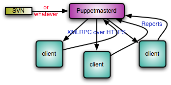

Puppet : Solution de gestion de fichier de configuration
Contents
- 1 Introduction
- 2 Hiérarchie de Puppet
- 3 Installation
- 4 Configuration
- 5 Le langage
- 5.1 Les fonctions
- 5.2 Installer des packages
- 5.3 Inclure / Exclure des modules
- 5.4 Les templates
- 5.5 Les Facters
- 5.6 Informations dynamiques
- 5.7 Les Parsers
- 5.8 Du Ruby dans vos manifests
- 5.9 Ajouter une variable Ruby dans les manifests
- 5.10 Les classes
- 5.11 Utilisation des tables de hash
- 5.12 Les regex
- 5.13 Substitution
- 5.14 Notify et Require
- 5.15 L'opérateur +>
- 5.16 Vérifier le numéro de version d'un soft
- 5.17 Les ressources virtuelles
- 5.18 Suppression d'un fichier évoluée
- 6 Les modules
- 7 Exemples de modules
- 7.1 stdlib
- 7.2 Puppet
- 7.3 resolvconf
- 7.4 packages_defaults
- 7.5 configurations_defaults
- 7.6 OpenSSH - 1
- 7.7 OpenSSH - 2
- 7.8 SELinux
- 7.9 Grub
- 7.10 Kdump
- 7.11 Tools
- 7.12 Timezone
- 7.13 NTP
- 7.14 MySecureShell
- 7.15 OpenLDAP client & Server
- 7.16 sudo
- 7.17 snmpd
- 7.18 Postfix
- 7.19 Nsswitch
- 7.20 Nagios NRPE + plugins
- 7.21 Munin
- 7.22 Mcollective
- 7.23 Bind
- 7.24 Importation d'un module
- 8 Utilisation
- 9 Utilisation avancée
- 10 FAQ
- 11 Ressources
| Software version | 3.0+ |
|---|---|
| Operating System | Debian 7 |
| Website | Puppet Website |
| Last Update | 02/08/2013 |
| Others | Clients OS: Debian 6/7 Solaris 10 RHEL 6 |
{kind=link}
1 Introduction
Puppet est une application très pratique… C’est ce que l’on pourrait retrouver dans les entreprises avec de grands volumes de serveurs, où le système d’information est « industrialisé ».
Puppet permet d’automatiser un grand nombre de tache d’administration, comme l’installation de logiciels, de services ou encore de modifier des fichiers.
Puppet permet de faire cela de manière centralisée ce qui permet d’administrer et de mieux contrôler un grand nombre de serveur hétérogènes ou homogènes.
Puppet fonctionne en mode Client / Serveur.
Sur chaque machine un client va être installé et c’est lui qui va contacter le PuppetMaster, le serveur, par le biais de communication HTTPS, et donc SSL, un système pki est fourni.
Puppet a été développé en Ruby le rendant multiplateforme : bsd (free, macos …) ,linux (redhat, debian, suse …), sun (opensolaris …)
Reductive Labs, la société éditant Puppet, a développé un produit complémentaire, nommé Facter.
Cette application permet de lister des éléments propres aux systèmes administrés, comme le nom de machine, l’adresse ip, la distribution, des variables d’environnement utilisables dans les templates de puppet.
Puppet gérant des templates, on peut rapidement comprendre l’utilité de Facter, si par exemple on gère une ferme de serveurs de messagerie, qui nécessite un paramétrage contenant par exemple le nom de la machine. Là un template combiné avec des variables d’environnements s’avère tout à fait utile.
Enfin bref Puppet combiné à Facter me semble une solution très intéressante pour simplifier l’administration de systèmes.
Voici un schéma de fonctionnement de puppet :

{kind=link}
Pour la configuration de Puppet, si vous souhaitez utiliser un IDE, il existe Geppetto. Je vous le recommande d'ailleurs, ça vous évitera bien des soucis de syntaxe.
Les documentations pour des version antérieurs à ce celle ci sont disponible ici :
2 Hiérarchie de Puppet
Avant d'aller plus loin, j'ai pompé depuis le site officiel le fonctionnement de l'arborescence de puppet :
All Puppet data files (modules, manifests, distributable files, etc) should be maintained in a Subversion or CVS repository (or your favorite Version Control System). The following hierarchy describes the layout one should use to arrange the files in a maintainable fashion:
- /manifests/: this directory contains files and subdirectories that determine the manifest of individual systems but do not logically belong to any particular module. Generally, this directory is fairly thin and alternatives such as the use of LDAP or other external node tools can make the directory even thinner. This directory contains the following special files:
- site.pp: first file that the Puppet Master parses when determining a server's catalog. It imports all the underlying subdirectories and the other special files in this directory. It also defines any global defaults, such as package managers. See sample site.pp.
- templates.pp: defines all template classes. See also terminology:template classes. See sample templates.pp.
- nodes.pp: defines all the nodes if not using an external node tool. See sample nodes.pp.
- /modules/{modulename}/: houses puppet modules in subdirectories with names matching that of the module name. This area defines the general building blocks of a server and contains modules such as for openssh, which will generally define classes openssh::client and openssh::server to setup the client and server respectively. The individual module directories contains subdirectories for manifests, distributable files, and templates. See `modules organization, terminology:module.
- /modules/user/: A special module that contains manifests for users. This module contains a special subclass called user::virtual which declares all the users that might be on a given system in a virtual way. The other subclasses in the user module are classes for logical groupings, such as user::unixadmins, which will realize the individual users to be included in that group. See also naming conventions, terminology:realize.
- /services/ : this is an additional modules area that is specified in the module path for the puppetmaster. However, instead of generic modules for individual services and bits of a server, this module area is used to model servers specific to enterprise level infrastructure services (core infrastructure services that your IT department provides, such as www, enterprise directory, file server, etc). Generally, these classes will include the modules out of /modules/ needed as part of the catalog (such as openssh::server, postfix, user::unixadmins, etc). The files section for these modules is used to distribute configuration files specific to the enterprise infrastructure service such as openldap schema files if the module were for the enterprise directory. To avoid namespace collision with the general modules, it is recommended that these modules/classes are prefixed with s_ (e.g. s_ldap for the enterprise directory server module)
- /clients/: similar to the /services/ module area, this area is used for modules related to modeling servers for external clients (departments outside your IT department). To avoid namespace collision, it is recommended that these modules/classes are prefixed with c_.
- /notes/: this directory contains notes for reference by local administrators.
- /plugins/: contains custom types programmed in Ruby. See also terminology:plugin-type.
- /tools/: contains scripts useful to the maintenance of Puppet.
3 Installation
3.1 Serveur Puppet
La version utilisée du master doit être la même que celle des postes clients. Il est très fortement recommandé d'utiliser une version supérieure ou égale à 0.25.4 (correctif de nombreux problèmes de performance). Pour cela, sur Debian, il faudra installer la version disponible en squeeze/lenny-backport ou supérieur, et la bloquer pour éviter qu'une upgrade malencontreuse ne change sa version (utilisation des "pin locks"). Nous allons opter ici pour la version donnée sur le site officiel de Puppet.
Pour le moment,il faut configurer le fichier /etc/hosts avec l'ip du serveur :
| |
... 192.168.0.93 puppet-prd.deimos.fr puppet ... |
Note : Vérifiez que l'horloge du puppetmaster (et les client aussi bien sûr) est bien à jour/synchronisée. Il peut y avoir un problème avec les certificats qui seront non reconnus/acceptés si il y a un décalage (faire un `dpkg-reconfigure tz-data`).
Configurez le repository officiel de puppet si vous souhaitez la dernière version, sinon sautez cette étape pour installer la version qui est fournit par votre distribution :
| |
wget http://apt.puppetlabs.com/puppetlabs-release-stable.deb dpkg -i puppetlabs-release-stable.deb |
Et ensuite, nous mettez à jour :
| |
aptitude update |
Puis installer puppetmaster :
| |
aptitude install puppetmaster |
On peut vérifier que puppetmaster est bien installé en lançant 'facter' (voir si elle retourne bien quelque chose) ou la présence des fichiers SSL (dans /var/lib/puppet).
3.2 Serveur Web
Il va maintenant falloir configurer un serveur web sur la même machine que le serveur Puppet (Puppet Master). Pourquoi ? Tout simplement par ce que le serveur par défaut est Webrick et que celui ci s'écroule si 10 noeuds en simultané y accèdent.
| |
| Vous pouvez garder Webrick si vous souhaitez faire du test sur quelque noeuds, mais pas pour un passage en production ! |
Je vous laisse le choix ici entre Passenger et Nginx. Passenger est la solution recommandée depuis la version 3 de Puppet.
3.2.1 Passenger
Si vous avez fait le choix d'utiliser Passenger comme il est recommandé par PuppetLab, il va falloir désactiver le démarrage automatique du démon, puisque celui ci démarrera un serveur web et entrera en conflit avec Passenger si on le laisse :
| |
# Defaults for puppetmaster - sourced by /etc/init.d/puppetmaster
# Start puppetmaster on boot? If you are using passenger, you should
# have this set to "no"
START=no
# Startup options
DAEMON_OPTS=""
# What port should the puppetmaster listen on (default: 8140).
PORT=8140 |
Désactivez maintenant le service :
| |
/etc/init.d/puppetmaster stop |
Puis, installez Passenger :
| |
aptitude install puppetmaster-passenger |
Vous n'avez pas de configuration à faire. Tout est prévu par les packages officiels de Puppet. Dans le cas ou vous l'avez installé sans le repository officiel, voici la configuration générée :
| |
# you probably want to tune these settings PassengerHighPerformance on PassengerMaxPoolSize 12 PassengerPoolIdleTime 1500 # PassengerMaxRequests 1000 PassengerStatThrottleRate 120 RackAutoDetect Off RailsAutoDetect Off Listen 8140 <VirtualHost *:8140> SSLEngine on SSLProtocol -ALL +SSLv3 +TLSv1 SSLCipherSuite ALL:!ADH:RC4+RSA:+HIGH:+MEDIUM:-LOW:-SSLv2:-EXP SSLCertificateFile /var/lib/puppet/ssl/certs/puppet.deimos.lan.pem SSLCertificateKeyFile /var/lib/puppet/ssl/private_keys/puppet.deimos.lan.pem SSLCertificateChainFile /var/lib/puppet/ssl/certs/ca.pem SSLCACertificateFile /var/lib/puppet/ssl/certs/ca.pem # If Apache complains about invalid signatures on the CRL, you can try disabling # CRL checking by commenting the next line, but this is not recommended. SSLCARevocationFile /var/lib/puppet/ssl/ca/ca_crl.pem SSLVerifyClient optional SSLVerifyDepth 1 # The `ExportCertData` option is needed for agent certificate expiration warnings SSLOptions +StdEnvVars +ExportCertData # This header needs to be set if using a loadbalancer or proxy RequestHeader unset X-Forwarded-For RequestHeader set X-SSL-Subject %{SSL_CLIENT_S_DN}e RequestHeader set X-Client-DN %{SSL_CLIENT_S_DN}e RequestHeader set X-Client-Verify %{SSL_CLIENT_VERIFY}e DocumentRoot /usr/share/puppet/rack/puppetmasterd/public/ RackBaseURI / <Directory /usr/share/puppet/rack/puppetmasterd/> Options None AllowOverride None Order allow,deny allow from all </Directory> </VirtualHost> |
3.2.2 NGINX et Mongrel
3.2.2.1 Installation
Si vous avez fait le choix d'NGINX et Mongrel, il va falloir commencer par les installer :
| |
aptitude install nginx mongrel |
3.2.2.2 Configuration
Modification du fichier /etc/default/puppetmaster :
| |
# Defaults for puppetmaster - sourced by /etc/init.d/puppet # Start puppet on boot? START=yes # Startup options DAEMON_OPTS="" # What server type to run # Options: # webrick (default, cannot handle more than ~30 nodes) # mongrel (scales better than webrick because you can run # multiple processes if you are getting # connection-reset or End-of-file errors, switch to # mongrel. Requires front-end web-proxy such as # apache, nginx, or pound) # See: http://reductivelabs.com/trac/puppet/wiki/UsingMongrel SERVERTYPE=mongrel # How many puppetmaster instances to start? Its pointless to set this # higher than 1 if you are not using mongrel. PUPPETMASTERS=4 # What port should the puppetmaster listen on (default: 8140). If # PUPPETMASTERS is set to a number greater than 1, then the port for # the first puppetmaster will be set to the port listed below, and # further instances will be incremented by one # # NOTE: if you are using mongrel, then you will need to have a # front-end web-proxy (such as apache, nginx, pound) that takes # incoming requests on the port your clients are connecting to # (default is: 8140), and then passes them off to the mongrel # processes. In this case it is recommended to run your web-proxy on # port 8140 and change the below number to something else, such as # 18140. PORT=18140 |
Après (re-)lancement du démon, on doit pouvoir voir les sockets attachées :
| |
> netstat -pvltpn Connexions Internet actives (seulement serveurs) Proto Recv-Q Send-Q Adresse locale Adresse distante Etat PID/Program name tcp 0 0 0.0.0.0:41736 0.0.0.0:* LISTEN 2029/rpc.statd tcp 0 0 0.0.0.0:111 0.0.0.0:* LISTEN 2018/portmap tcp 0 0 0.0.0.0:22 0.0.0.0:* LISTEN 2333/sshd tcp 0 0 127.0.0.1:18140 0.0.0.0:* LISTEN 10059/ruby tcp 0 0 127.0.0.1:18141 0.0.0.0:* LISTEN 10082/ruby tcp 0 0 127.0.0.1:18142 0.0.0.0:* LISTEN 10104/ruby tcp 0 0 127.0.0.1:18143 0.0.0.0:* LISTEN 10126/ruby tcp6 0 0 :::22 :::* LISTEN 2333/sshd |
On ajoute les lignes suivante dans le fichier /etc/puppet/puppet.conf :
| |
[main] logdir=/var/log/puppet vardir=/var/lib/puppet ssldir=/var/lib/puppet/ssl rundir=/var/run/puppet factpath=$vardir/lib/facter templatedir=$confdir/templates pluginsync = true [master]# These are needed when the puppetmaster is run by passenger# and can safely be removed if webrick is used.ssl_client_header = HTTP_X_SSL_SUBJECTssl_client_verify_header = SSL_CLIENT_VERIFYreport = true [agent]server=puppet-srv.deimos.fr |
On modifie la configuration suivante dans /etc/nginx.conf :
| |
user www-data;
worker_processes 4;
error_log /var/log/nginx/error.log;
pid /var/run/nginx.pid;
events {
worker_connections 1024;
# multi_accept on;
}
http {
#include /etc/nginx/mime.types; default_type application/octet-stream;
access_log /var/log/nginx/access.log; sendfile on; tcp_nopush on;
# Look at TLB size in /proc/cpuinfo (Linux) for the 4k pagesize large_client_header_buffers 16 4k; proxy_buffers 128 4k;
#keepalive_timeout 0;
keepalive_timeout 65;
tcp_nodelay on;
gzip on;
gzip_disable "MSIE [1-6]\.(?!.*SV1)";
include /etc/nginx/conf.d/*.conf;
include /etc/nginx/sites-enabled/*;
} |
Et on ajoute cette configuration pour puppet :
| |
upstream puppet-prd.deimos.fr {
server 127.0.0.1:18140;
server 127.0.0.1:18141;
server 127.0.0.1:18142;
server 127.0.0.1:18143;
}
server {
listen 8140;
ssl on;
ssl_certificate /var/lib/puppet/ssl/certs/puppet-prd.pem; ssl_certificate_key /var/lib/puppet/ssl/private_keys/puppet-prd.pem; ssl_client_certificate /var/lib/puppet/ssl/ca/ca_crt.pem;
ssl_ciphers SSLv2:-LOW:-EXPORT:RC4+RSA;
ssl_session_cache shared:SSL:8m;
ssl_session_timeout 5m;
ssl_verify_client optional;
# obey to the Puppet CRL
ssl_crl /var/lib/puppet/ssl/ca/ca_crl.pem;
root /var/empty;
access_log /var/log/nginx/access-8140.log;
#rewrite_log /var/log/nginx/rewrite-8140.log;
# Variables
# $ssl_cipher returns the line of those utilized it is cipher for established SSL-connection
# $ssl_client_serial returns the series number of client certificate for established SSL-connection
# $ssl_client_s_dn returns line subject DN of client certificate for established SSL-connection
# $ssl_client_i_dn returns line issuer DN of client certificate for established SSL-connection
# $ssl_protocol returns the protocol of established SSL-connection
location / {
proxy_pass http://puppet-prd.deimos.fr; proxy_redirect off;
proxy_set_header Host $host;
proxy_set_header X-Real-IP $remote_addr;
proxy_set_header X-Forwarded-For $proxy_add_x_forwarded_for;
proxy_set_header X-Client_DN $ssl_client_s_dn;
proxy_set_header X-Client-Verify $ssl_client_verify;
proxy_set_header X-SSL-Subject $ssl_client_s_dn;
proxy_set_header X-SSL-Issuer $ssl_client_i_dn;
proxy_read_timeout 65;
}
} |
Ensuite on créer le lien symbolique pour appliquer la configuration :
| |
cd /etc/nginx/sites-available ln -s /etc/nginx/sites-enabled/puppetmaster . |
Et ensuite on redémarre le serveur Nginx.
Pour vérifier que les daemons tournent correctement, vous devez avoir les sockets suivantes ouvertes :
| |
> netstat -vlptn
Connexions Internet actives (seulement serveurs)
Proto Recv-Q Send-Q Adresse locale Adresse distante Etat PID/Program name
tcp 0 0 0.0.0.0:41736 0.0.0.0:* LISTEN 2029/rpc.statd
tcp 0 0 0.0.0.0:8140 0.0.0.0:* LISTEN 10293/nginx tcp 0 0 0.0.0.0:8141 0.0.0.0:* LISTEN 10293/nginx
tcp 0 0 0.0.0.0:111 0.0.0.0:* LISTEN 2018/portmap
tcp 0 0 0.0.0.0:22 0.0.0.0:* LISTEN 2333/sshd
tcp 0 0 127.0.0.1:18140 0.0.0.0:* LISTEN 10059/ruby
tcp 0 0 127.0.0.1:18141 0.0.0.0:* LISTEN 10082/ruby
tcp 0 0 127.0.0.1:18142 0.0.0.0:* LISTEN 10104/ruby
tcp 0 0 127.0.0.1:18143 0.0.0.0:* LISTEN 10126/ruby
tcp6 0 0 :::22 :::* LISTEN 2333/sshd |
3.3 Clients Puppet
Pour les clients, c'est simple aussi. Mais avant ajoutez la ligne du serveur dans le fichier hosts :
| |
... 192.168.0.93 puppet-prd.deimos.fr puppet |
Ceci n'est pas obligatoire si vos noms DNS sont correctement configurés.
3.3.1 Debian
Si vous souhaitez utiliser la dernière version :
| |
wget http://apt.puppetlabs.com/puppetlabs-release-stable.deb dpkg -i puppetlabs-release-stable.deb |
Et ensuite, nous mettez à jour :
| |
aptitude update |
Vérifier que le fichier /etc/hosts contient bien le hostname de la machine cliente, puis installez puppet :
| |
aptitude install puppet |
3.3.2 Red Hat
Tout comme Debian, il existe un repo yum sur Red Hat et nous allons installer un package qui va le configurer pour nous :
| |
rpm -ivh http://yum.puppetlabs.com/el/6/products/x86_64/puppetlabs-release-6-6.noarch.rpm |
Puis on installe :
| |
yum install puppet |
3.3.3 Solaris
Le client Puppet dans la version stable de blastwave est trop ancien (0.23). Il faudra donc installer Puppet (et Facter) par l'intermédiaire du gestionnaire standard de Ruby: gem.
Pour cela, il faudra au préalable installer ruby avec la commande suivante:
| |
pkg-get -i ruby |
| | ||
|
Vérifier que rubygems n'est pas déjà installé, sinon le supprimer :
|
puis installer une version plus à jour à partir des sources:
| |
wget http://rubyforge.org/frs/download.php/45905/rubygems-1.3.1.tgz gzcat rubygems-1.3.1.tgz | tar -xf - cd rubygems-1.3.1 ruby setup.rb gem --version |
Installer puppet avec la commande et l'argument -p si vous avez un proxy :
| |
gem install puppet --version '0.25.4' -p http://proxy:3128/ |
Il faut modifier/ajouter quelques commandes qui ne sont pas par défaut sur Solaris, pour que Puppet fonctionne mieux:
- Créer un lien pour uname et puppetd :
| |
ln -s /usr/bin/uname /usr/bin/ ln -s /opt/csw/bin/puppetd /usr/bin/ |
- Créer un script appelé /usr/bin/dnsdomainname :
| |
#!/usr/bin/bash DOMAIN="`/usr/bin/domainname 2> /dev/null`" if [ ! -z "$DOMAIN" ]; then echo $DOMAIN | sed 's/^[^.]*.//' fi |
| |
chmod 755 /usr/bin/dnsdomainname |
Ensuite, la procédure est la même que pour les autres OS, c'est à dire, modifier /etc/hosts pour inclure puppet-prd.deimos.fr, et lancer:
| |
puppetd --verbose --no-daemon --test --server puppet-prd.deimos.fr |
A ce stade là, si ça ne fonctionne pas, c'est tout simplement qu'il faut modifier la configuration (puppet.conf) de votre client.
4 Configuration
4.1 Serveur
Pour la partie serveur, voici comment est constitué l'arborescence de celui ci (dans /etc/puppet) :
. |-- auth.conf |-- autosign.conf |-- fileserver.conf |-- manifests | |-- common.pp | |-- modules.pp | `-- site.pp |-- modules |-- puppet.conf `-- templates
4.1.1 auth.conf
C'est ici que nous allons régler toutes les autorisations :
| |
# This is an example auth.conf file, it mimics the puppetmasterd defaults
#
# The ACL are checked in order of appearance in this file.
#
# Supported syntax:
# This file supports two different syntax depending on how
# you want to express the ACL.
#
# Path syntax (the one used below):
# ---------------------------------
# path /path/to/resource
# [environment envlist]
# [method methodlist]
# [auth[enthicated] {yes|no|on|off|any}]
# allow [host|ip|*]
# deny [host|ip]
#
# The path is matched as a prefix. That is /file match at
# the same time /file_metadat and /file_content.
#
# Regex syntax:
# -------------
# This one is differenciated from the path one by a '~'
#
# path ~ regex
# [environment envlist]
# [method methodlist]
# [auth[enthicated] {yes|no|on|off|any}]
# allow [host|ip|*]
# deny [host|ip]
#
# The regex syntax is the same as ruby ones.
#
# Ex:
# path ~ .pp$
# will match every resource ending in .pp (manifests files for instance)
#
# path ~ ^/path/to/resource
# is essentially equivalent to path /path/to/resource
#
# environment:: restrict an ACL to a specific set of environments
# method:: restrict an ACL to a specific set of methods
# auth:: restrict an ACL to an authenticated or unauthenticated request
# the default when unspecified is to restrict the ACL to authenticated requests
# (ie exactly as if auth yes was present).
#
### Authenticated ACL - those applies only when the client
### has a valid certificate and is thus authenticated
# allow nodes to retrieve their own catalog (ie their configuration)
path ~ ^/catalog/([^/]+)$
method find
allow $1
# allow nodes to retrieve their own node definition
path ~ ^/node/([^/]+)$
method find
allow $1
# allow all nodes to access the certificates services
path /certificate_revocation_list/ca
method find
allow *
# allow all nodes to store their reports
path /report
method save
allow *
# inconditionnally allow access to all files services
# which means in practice that fileserver.conf will
# still be used
path /file
allow *
### Unauthenticated ACL, for clients for which the current master doesn't
### have a valid certificate; we allow authenticated users, too, because
### there isn't a great harm in letting that request through.
# allow access to the master CA
path /certificate/ca
method find
allow *
path /certificate/
method find
allow *
path /certificate_request
method find, save
allow *
# this one is not stricly necessary, but it has the merit
# to show the default policy which is deny everything else
path /
auth any
allow *.deimos.fr |
Dans le cas ou vous rencontrez des problèmes d'accès, pour faire simple mais non sécurisé, ajoutez cette ligne à la fin de votre fichier de configuration le temps de vos tests :
| |
allow * |
4.1.2 autosign.conf
Vous pouvez autosigner certains certificats pour gagner du temps. Ceci peut être un peu dangereux, mais si votre filtrage des noeuds est correctement faite derrière, pas de soucis :-)
| |
*.deimos.fr |
Ici je vais autosigner tous mes nodes ayant comme domaine deimos.fr
4.1.3 fileserver.conf
Donnez les autorisations des machines clientes dans le fichier /etc/puppet/fileserver.conf :
| |
# This file consists of arbitrarily named sections/modules # defining where files are served from and to whom # Define a section 'files' # Adapt the allow/deny settings to your needs. Order # for allow/deny does not matter, allow always takes precedence # over deny [files] path /etc/puppet/files allow *.deimos.fr# allow *.example.com # deny *.evil.example.com # allow 192.168.0.0/24 [plugins] allow *.deimos.fr# allow *.example.com # deny *.evil.example.com # allow 192.168.0.0/24 |
4.1.4 manifests
Créons les fichiers manquants :
| |
touch /etc/puppet/manifests/{common.pp,modules.pp,site.pp} |
4.1.4.1 common.pp
Puis on va les renseigner un par un. Le common.pp est vide, mais vous pouvez y insérer des choses qui permettrons d'être pris en tant que configuration globale.
| |
4.1.4.2 modules.pp
Ensuite je vais définir ici mon ou mes modules de base. Par exemple, dans ma future configuration je vais déclarer un module "base" qui contiendra tout ce que n'importe quelle machine faisant partie de puppet héritera :
| |
import "base" |
4.1.4.3 site.pp
On demande de charger tous les modules présents dans le dossier modules :
| |
# /etc/puppet/manifests/site.pp import "common.pp" # The filebucket option allows for file backups to the server filebucket { main: server => 'puppet-prod-nux.deimos.fr' } # Backing up all files and ignore vcs files/folders File { backup => '.puppet-bak', ignore => ['.svn', '.git', 'CVS' ] } # Default global path Exec { path => "/usr/bin:/usr/sbin/:/bin:/sbin" } # Import base module import "modules.pp" |
Ici je lui dis d'utiliser le filebucket présent sur le serveur puppet et de renommer les fichiers qui vont être remplacés par puppet en <fichier>.puppet-bak.
Je lui demande également d'ignorer tout dossiers ou fichiers créer par des VCS de type SVN, gut ou CVS.
Et enfin, j'indique le path par défaut que puppet aura quant il s'exécutera sur les clients.
Il faut savoir que toute cette configuration est propre au serveur puppet, donc global. Tous ce que nous mettrons dedans pourra être hérité.
On relance le puppetmaster pour être sûr que les modifications côté serveur ont bien été prises en compte.
4.1.5 puppet.conf
J'ai volontairement passé le dossier modules car c'est le gros morceau de puppet et fera l'objet d'une attention toute particulière plus tard dans cet article.
Donc nous allons passer au fichier de configuration puppet.conf que vous avez normalement déjà configuré lors de l'installation mongrel/nginx... :
| |
[main] logdir=/var/log/puppet vardir=/var/lib/puppet ssldir=/var/lib/puppet/ssl rundir=/var/run/puppet factpath=$vardir/lib/facter templatedir=$confdir/templates pluginsync = true [master]# These are needed when the puppetmaster is run by passenger# and can safely be removed if webrick is used.ssl_client_header = HTTP_X_SSL_SUBJECTssl_client_verify_header = SSL_CLIENT_VERIFYreport = true [agent]server=puppet-srv.deimos.fr |
Pour le dossier templates, je n'ai rien dedans.
4.2 Client
Chaque client doit avoir son entrée dans le serveur DNS (tout comme le serveur) !
4.2.1 puppet.conf
4.2.1.1 Debian / Red Hat
Le fichier de configuration doit contenir l'adresse du serveur :
| |
[main]
# The Puppet log directory.
# The default value is '$vardir/log'.
logdir = /var/log/puppet
# Where Puppet PID files are kept.
# The default value is '$vardir/run'.
rundir = /var/run/puppet
# Where SSL certificates are kept.
# The default value is '$confdir/ssl'.
ssldir = $vardir/ssl
# Puppet master server server = puppet-prd.deimos.fr # Add custom facts pluginsync = true pluginsource = puppet://$server/plugins factpath = /var/lib/puppet/lib/facter
[agent]
# The file in which puppetd stores a list of the classes
# associated with the retrieved configuratiion. Can be loaded in
# the separate ``puppet`` executable using the ``--loadclasses``
# option.
# The default value is '$confdir/classes.txt'.
classfile = $vardir/classes.txt
# Where puppetd caches the local configuration. An
# extension indicating the cache format is added automatically.
# The default value is '$confdir/localconfig'.
localconfig = $vardir/localconfig
# Reporting
report = true |
4.2.1.2 Solaris
Pour la partie Solaris, il a fallu pas mal adapter la configuration :
| |
[main]
logdir=/var/log/puppet
vardir=/var/opt/csw/puppet
rundir=/var/run/puppet
# ssldir=/var/lib/puppet/ssl
ssldir=/etc/puppet/ssl
# Where 3rd party plugins and modules are installed
libdir = $vardir/lib
templatedir=$vardir/templates
# Turn plug-in synchronization on.
pluginsync = true
pluginsource = puppet://$server/plugins
factpath = /var/puppet/lib/facter
[puppetd]
report=true
server=puppet-prd.deimos.fr
# certname=puppet-prd.deimos.fr
# enable the marshal config format
config_format=marshal
# different run-interval, default= 30min
# e.g. run puppetd every 4 hours = 14400
runinterval = 14400
logdest=/var/log/puppet/puppet.log |
5 Le langage
Avant de commencer la création de modules, il va falloir en connaitre un peu plus sur la syntaxe/le langage utilisé pour puppet. Il faut savoir que sa syntaxe est proche du ruby et qu'il est même possible d'écrire des modules complets en ruby. Je vais expliquer ici quelques techniques/possibilités pour vous permettre de créer des modules avancés par la suite.
Nous allons utiliser des types également, je ne rentrerais pas en détail dessus, car la doc sur le site est suffisamment clair pour cela : http://docs.puppetlabs.com/references/latest/type.html
5.1 Les fonctions
Voici comment définir une fonction avec plusieurs arguments :
define network_config( $ip, $netmask, $gateway ) { notify {"$ip, $netmask, $gateway":} } network_config { "eth0": ip => '192.168.0.1', netmask => '255.255.255.0', gateway => '192.168.0.254, }
5.2 Installer des packages
Nous allons voir ici comment installer un package, puis utiliser une fonction pour facilement en installer bien plus. Pour un package, c'est simple :
| |
# Install kexec-tools package { 'kexec-tools': ensure => 'installed' } |
Nous demandons ici qu'un package (kexec-tool) soit installé. Si nous souhaitons que plusieurs soient installés, il va falloir créer un tableau :
| |
# Install kexec-tools package { [ 'kexec-tools', 'package2', 'pacakge3' ]: ensure => 'installed' } |
C'est plutôt pratique et les tableau fonctionnent très souvent de cette manière pour a peu prêt n'importe quel type utilisé. Nous pouvons aussi créer une fonction pour cela dans laquelle nous allons lui envoyer chaque élément du tableau :
| |
# Validate that pacakges are installed define packages_install () { notice("Installation of ${name} package") package { "${name}": ensure => 'installed' } } # Set all custom packages (not embended in distribution) that need to be installed packages_install { [ 'puppet', 'tmux' ]: } |
Certains d'entre vous dirons que pour ce cas précis, ça ne sert à rien, puisque la méthode au dessus permet de le faire tandis que d'autres trouveront cette méthode plus élégante et facile à appréhender pour un novice qui arrive sur puppet. Le nom de la fonction utilisé est packages_install, la variable $name est toujours le premier élément envoyé à une fonction, qui correspond ici à chaque éléments de notre tableau.
5.3 Inclure / Exclure des modules
Vous venez de voir les fonctions, nous allons les poussées un peu plus loin avec une solution pour inclure et exclure le chargement de certains modules. Ici, j'ai un fichier de fonctions :
| |
# Load or not modules (include/exclude) define include_modules () { if ($exclude_modules == undef) or !($name in $exclude_modules) { include $name } } |
Là j'ai un autre fichier représentant les rôles de mes serveurs (on y viendra plus tard) :
| |
# Load modules $minimal_modules = [ 'puppet', 'resolvconf', 'packages_defaults', 'configurations_defaults' ] include_modules{ $minimal_modules: } |
Et enfin un fichier contenant le nom d'un serveur dans lequel je vais lui demander de charger certains modules, mais d'en exclure également une partie :
| |
node 'srv.deimos.fr' { $exclude_modules = [ 'resolvconf' ] include base::minimal } |
Ici j'utilise un tableau '$exclude_modules' (avec un seul élément, mais vous pouvez en mettre plusieurs séparés par des virgules), qui va me permettre de préciser les modules à exclude. Car par la ligne d'après il va charger tout ce dont il aura besoin grâce à la fonction include_modules.
5.4 Les templates
Lorsque vous écrivez des manifests, vous faites appelle à une directive nommée 'File' lorsque vous souhaitez envoyer un fichier sur un serveur. Mais si le contenu de ce fichier doit changer en fonction de certains paramètres (nom, ip, timezone, domaine...), alors il faut utiliser les templates ! Et c'est là que ça devient intéressant puisqu'il est possible de scripter au sein même d'un template pour en générer le contenu. Les templates utilisent un langage très proche de celui du ruby.
Dans un template, la syntaxe suivante est utilisée :
- Pour les facts, c’est simple, il faut préfixer la variable par un “@”. Par exemple <%= fqdn %> devient <%= @fqdn %>.
- Pour vos variables, si elle est déclarée dans le manifest qui appelle le template, utilisez également le “@”.
- Ma variable myvar définie dans le manifeste qui appelle ce template a pour valeur <%= myvar %>.
Dans le cas ou vous souhaitez accéder à une variable définie en dehors du manifest actuel, en dehors du scope local, utilisez la fonction scope.lookupvar :
<%= scope.lookupvar('common::config::myvar') %>
Vous pouvez valider votre template via :
| |
erb -P -x -T '-' mytemplate.erb | ruby -c |
Voici un exemple avec OpenSSH pour que vous compreniez. J'ai donc pris la configuration qui va varier selon certains paramètres :
| |
# Package generated configuration file # See the sshd(8) manpage for details # What ports, IPs and protocols we listen for <% ssh_default_port.each do |val| -%> Port <%= val -%> <% end -%> # Use these options to restrict which interfaces/protocols sshd will bind to #ListenAddress :: #ListenAddress 0.0.0.0 Protocol 2 # HostKeys for protocol version 2 HostKey /etc/ssh/ssh_host_rsa_key HostKey /etc/ssh/ssh_host_dsa_key #Privilege Separation is turned on for security UsePrivilegeSeparation yes # Lifetime and size of ephemeral version 1 server key KeyRegenerationInterval 3600 ServerKeyBits 768 # Logging SyslogFacility AUTH LogLevel INFO # Authentication: LoginGraceTime 120 PermitRootLogin yes StrictModes yes RSAAuthentication yes PubkeyAuthentication yes #AuthorizedKeysFile %h/.ssh/authorized_keys # Don't read the user's ~/.rhosts and ~/.shosts files IgnoreRhosts yes # For this to work you will also need host keys in /etc/ssh_known_hosts RhostsRSAAuthentication no # similar for protocol version 2 HostbasedAuthentication no # Uncomment if you don't trust ~/.ssh/known_hosts for RhostsRSAAuthentication #IgnoreUserKnownHosts yes # To enable empty passwords, change to yes (NOT RECOMMENDED) PermitEmptyPasswords no # Change to yes to enable challenge-response passwords (beware issues with # some PAM modules and threads) ChallengeResponseAuthentication no # Change to no to disable tunnelled clear text passwords #PasswordAuthentication yes # Kerberos options #KerberosAuthentication no #KerberosGetAFSToken no #KerberosOrLocalPasswd yes #KerberosTicketCleanup yes # GSSAPI options #GSSAPIAuthentication no #GSSAPICleanupCredentials yes X11Forwarding yes X11DisplayOffset 10 PrintMotd no PrintLastLog yes TCPKeepAlive yes #UseLogin no #MaxStartups 10:30:60 #Banner /etc/issue.net # Allow client to pass locale environment variables AcceptEnv LANG LC_* Subsystem sftp /usr/lib/openssh/sftp-server UsePAM yes # AllowUsers <%= ssh_allowed_users %> |
Ici nous utilisons donc 2 types d'utilisation de templates. Une multi lignes a répétition, et l'autre avec un simple remplacement de variables :
- ssh_default_port.each do : permet de mettre une ligne de "Port num_port" a chaque port spécifié
- ssh_allowed_users : permet de donner une liste d'utilisateur
Ces variables sont généralement a déclarer soit dans la partie 'node' ou bien dans la configuration globale. Nous venons de voir comment mettre une variable ou une boucle dans un template, mais sachez qu'il est également possible de mettre des if ! Bref, un langage complet existe et vous permet de moduler a souhait un fichier.
Ces méthodes s'avèrent simple et très efficaces. Petite subtilité :
- -%> : Lorsqu'une ligne se termine comme ceci, c'est qu'il ne va pas y avoir de saut de ligne grâce au - situé à la fin.
- %> : Il y aura un saut de ligne ici.
5.4.1 Les inline-templates
Ceci est une petite subtilité qui peut paraitre inutile, mais est en fait très utile pour exécuter de petites méthodes au sein d'un manifest ! Prenez par exemple la fonction 'split' qui aujourd'hui existe dans puppet, il semblerait normal que la fonction 'join' existe non ? Et bien non...enfin pas dans la version actuelle au moment ou j'écris ces lignes (la 2.7.18). Je peux donc utiliser de la même façons que les templates du code dans mes manifests, voyez plutôt :
$ldap_servers = [ '192.168.0.1', '192.168.0.2', '127.0.0.1' ]
$comma_ldap_servers = inline_template("<%= (ldap_servers).join(',') %>")- $ldap_servers : ceci est un simple tableau avec ma liste de serveurs LDAP
- $comma_ldap_servers : nous utilisons la fonction inline_template, qui va appeler la fonction join, lui passer le tableau ldap_servers et joindre le contenu avec des virgules.
J'aurais au finale :
$comma_ldap_servers = '192.168.0.1,192.168.0.2,127.0.0.1'
5.5 Les Facters
Les "facts", sont des scripts (voir /usr/lib/ruby/1.8/facter pour les facts standards) permettant de construire des variables dynamiques, qui changent en fonction de l'environnement dans lequel ils sont exécutés.
Par exemple, on pourra définir un "fact", qui détermine si l'on est sur une machine de type "cluster" en fonction de la présence ou l'absence d'un fichier :
| |
# is_cluster.rb Facter.add("is_cluster") do setcode do FileTest.exists?("/etc/cluster/nodeid") end end |
On peut aussi utiliser de fonctions qui permettent de mettre directement dans des templates, des fonctions de type facter (downcase ou upcase pour changer la casse) :
| |
#
# Config file for collectd(1).
# Please read collectd.conf(5) for a list of options.
# http://collectd.org/
#
Hostname <%= hostname.downcase %>FQDNLookup true |
Attention, si l'on veut tester le fact sur la machine destination, il ne faudra pas oublier de spécifier le chemin ou se trouvent les facts sur la machine :
| |
export FACTERLIB=/var/lib/puppet/lib/facter |
ou pour Solaris :
| |
export FACTERLIB=/var/opt/csw/puppet/lib/facter |
Pour voir la liste des facts ensuite présent sur le système, il faut simplement taper la commander facter :
| |
> facter facterversion => 1.5.7 hardwareisa => i386 hardwaremodel => i86pc hostname => PA-OFC-SRV-UAT-2 hostnameldap => PA-OFC-SRV-UAT id => root interfaces => lo0,e1000g0,e1000g0_1,e1000g0_2,e1000g1,e1000g2,e1000g3,clprivnet0 ... |
Voir http://docs.puppetlabs.com/guides/custom_facts.html pour plus de détails.
5.6 Informations dynamiques
Il est possible d'utiliser des scripts côté serveur et d'en récupérer le contenu dans une variable. Voici un exemple :
| |
#!/usr/bin/ruby require 'open-uri' page = open("http://www.puppetlabs.com/misc/download-options/").read print page.match(/stable version is ([\d\.]*)/)[1] |
Et dans le manifest :
$latestversion = generate("/usr/bin/latest_puppet_version.rb") notify { "The latest stable Puppet version is ${latestversion}. You're using ${puppetversion}.": }
Magique non ? :-). Sachez qu'il est même possible de passer des arguments avec une virgule entre chaque !!!
5.7 Les Parsers
Les parsers sont la création de fonctions particulières utilisables dans les manifests (côté serveur). Par exemple, j'ai créer un parser qui va me permettre de faire du reverse lookup dns :
| |
# Dns2IP for Puppet # Made by Pierre Mavro # Does a DNS lookup and returns an array of strings of the results # Usage : need to send one string dns servers separated by comma. The return will be the same require 'resolv' module Puppet::Parser::Functions newfunction(:dns2ip, :type => :rvalue) do |arguments| result = [ ] # Split comma sperated list in array dns_array = arguments[0].split(',') # Push each DNS/IP address in result array dns_array.each do |dns_name| result.push(Resolv.new.getaddresses(dns_name)) end # Join array with comma dns_list = result.join(',') # Delete last comma if exist good_dns_list = dns_list.gsub(/,$/, '') return good_dns_list end end |
Nous allons pouvoir créer cette variable puis l'insérer dans nos manifests :
$comma_ldap_servers = 'ldap1.deimos.fr,ldap2.deimos.fr,127.0.0.1' $ip_ldap_servers = dns2ip("${comma_ldap_servers}")
J'envoie ici une liste de serveur LDAP et il me sera retourné leurs adresses IP. Vous comprenez maintenant que c'est un appel, un peu comme les inline_templates, mais qui est bien plus puissant.
| |
|
J'ai pu constater un comportement de cache assez désagréable avec ce type de fonctions ! En effet, lorsque vous développez un parser et que vous le testez, il est fort probable que vous utilisiez des fonctions 'Notify' dans vos manifests pour debugger. Cependant les modifications que vous ferez sur votre parser ne s'appliqueront pas forcément tant que vous n'aurez pas vidé les caches. Après quelques recherches et demandes IRC, il s'avère que la seule méthode fonctionnelle soit de redémarrer le Puppet Master et le serveur web (Nginx dans notre cas). Ca fonctionne très bien, mais c'est un peu pénible lors de la phase de debug. |
5.8 Du Ruby dans vos manifests
Il est tout à fait possible d'écrire du Ruby dans vos manifests. Voyez plutôt :
notice( "I am running on node %s" % scope.lookupvar("fqdn") )
Ca ressemble fortement à un sprintf.
5.9 Ajouter une variable Ruby dans les manifests
Si nous souhaitons par exemple récupérer l'heure actuelle dans un manifest :
require 'time' scope.setvar("now", Time.now) notice( "Here is the current time : %s" % scope.lookupvar("now") )
5.10 Les classes
On peut utiliser des classes avec des arguments comme ceci :
class mysql( $package, $socket, $port = "3306" ) { … } class { "mysql": package => "percona-sql-server-5.0", socket => "/var/run/mysqld/mysqld.sock", port => "3306", }
5.11 Utilisation des tables de hash
Tout comme les tableaux, il est également possible d'utilise les tables de hasch, regardez cet exemple :
$interface = { name => 'eth0', address => '192.168.0.1' } notice("Interface ${interface[name]} has address ${interface[address]}")
5.12 Les regex
Il est possible d'utiliser les regex et d'en récupérer les patterns :
$input = "What a great tool" if $input =~ /What a (\w+) tool/ { notice("You said the tool is : '$1'. The complete line is : $0") }
5.13 Substitution
Il est possible de substituer :
$ipaddress = '192.168.0.15' $class_c = regsubst($ipaddress, "(.*)\..*", "\1.0") notify { $ipaddress: } notify { $class_c: }
Ce qui me donnera 192.168.0.15 et 192.168.0.0.
5.14 Notify et Require
Ces 2 fonctions sont fortes utiles une fois insérées dans un manifest. Cela permet par exemple à un service de dire qu'il require (require) un Package pour fonctionner et à un fichier de configuration de notifier (notify) un service s'il change pour que celui ci redémarre le démon. On peut également écrire quelque chose comme ceci :
Package["ntp"] -> File["/etc/ntp.conf"] ~> Service["ntp"]
- -> : signifie 'require'
- ~> : signifie 'notify'
Il est également possible de faire des require sur des classes :-)
5.15 L'opérateur +>
Voici un superbe opérateur qui va nous permettre de gagner un peu de temps. L'exemple ci dessous :
file { "/etc/ssl/certs/cookbook.pem": source => "puppet:///modules/apache/deimos.pem", } Service["apache2"] { require +> File["/etc/ssl/certs/deimos.pem"], }
Correspond à :
service { "apache2": enable => true, ensure => running, require => File["/etc/ssl/certs/deimos.pem"], }
5.16 Vérifier le numéro de version d'un soft
Si vous avez besoin de vérifier le numéro e version d'un soft pour prendre ensuite une décision, voici un bon exemple :
$app_version = "2.7.16" $min_version = "2.7.18" if versioncmp( $app_version, $min_version ) >= 0 { notify { "Puppet version OK": } } else { notify { "Puppet upgrade needed": } }
5.17 Les ressources virtuelles
Utile pour les écritures de test, vous pouvez par exemple créer une ressource en la précédent d'un '@'. Elle sera lue mais non exécutée jusqu'à ce qu'implicitement vous lui indiquiez (realize). Exemple :
@package { 'postfix': ensure => installed } realize( Package[''postfix] )
Un des gros avantages de cette méthode est de pouvoir déclarer à plusieurs endroits dans votre puppet master le realize sans pour autant que vous ayez de conflits !
5.18 Suppression d'un fichier évoluée
Vous pouvez demander la suppression d'un fichier au bout d'un temps donné ou bien à partir d'une certaine taille :
tidy { "/var/lib/puppet/reports": age => "1w", size => "512k", recurse => true, }
Ceci entrainera la suppression d'un dossier au bout d'une semaine avec son contenu.
6 Les modules
Il est recommandé de créer des modules pour chaque service afin de rendre la configuration plus souple. Ca fait partie de certaines best practices.
Je vais aborder ici différentes techniques en essayant de garder un ordre croissant de difficulté.
6.1 Initialisation d'un module
Nous allons donc créer sur le serveur, l'arborescence adéquate. Pour cet exemple, nous allons partir avec "sudo", mais vous pouvez choisir autre chose si vous souhaitez :
| |
mkdir -p /etc/puppet/modules/sudo/manifests touch /etc/puppet/modules/sudo/manifests/init.pp |
N'oubliez pas que ceci est nécessaire pour chaque module. Le fichier init.pp est le premier fichier qui se chargera lors de l'appel au module.
6.2 Le module initiale (base)
Il nous faut créer un module initiale qui va gérer la liste des serveurs, les fonctions dont nous allons avoir besoin, les roles, des variables globales... bref, ça peut paraitre un peu abstrait au premier abord mais sachez juste qu'il nous faut un module pour gérer ensuite tous les autres. Nous allons commencer par celui là qui est un des plus important pour la suite.
Comme vous le savez maintenant, il nous faut un fichier init.pp pour que le premier module soit chargé. Nous allons donc créer notre arborescence que nous allons appeler "base" :
| |
mkdir -p /etc/puppet/modules/base/{manifests,puppet/parser/functions} |
6.2.1 init.pp
Puis nous allons créer et renseigner le fichier init.pp :
| |
################################################################################ # BASE MODULES # ################################################################################ # Load defaults vars import "vars.pp" # Load functions import "functions.pp" # Load sysctl module include "sysctl" # Load network module include "network" # Load roles import "roles.pp" # Set servers properties import "servers.pp" |
Les lignes correspondantes à import sont équivalentes à un "include" (dans des services comme ssh ou nrpe) de mes autres fichier .pp que nous allons créer par la suite. Tandis que les include vont charger d'autres modules que je vais créer par la suite.
6.2.2 vars.pp
Nous allons ensuite créer le fichier vars.pp qui contiendra toutes mes variables globales pour mes futurs modules ou manifests (*.pp) :
| |
################################################################################ # VARS # ################################################################################ # Default admins emails $root_email = 'deimos@deimos.fr' # NTP Timezone. Usage : # Look at /usr/share/zoneinfo/ and add the continent folder followed by the town $set_timezone = 'Europe/Paris' # Define empty exclude modules $exclude_modules = [ ] # Default LDAP servers $ldap_servers = [ ] # Default DNS servers $dns_servers = [ '192.168.0.69', '192.168.0.27' ] |
6.2.3 functions.pp
Maintenant, nous allons créer des fonctions qui vont nous permettre de rajouter quelques fonctionnalités aujourd'hui non présentes dans puppet ou en simplifier certaines :
| |
|
Nous avons donc :
- Ligne 10 : La possibilité de charger ou non des modules via un tableau envoyé en argument de fonction (comme décrit plus haut dans cette documentation)
- Ligne 17 : La possibilité de vérifier que des packages sont installés sur la machine
- Ligne 26 : La possibilité de vérifier que des services sont correctement chargés au boot de la machine
- Ligne 34 : La possibilité de s'assurer qu'une ligne d'un fichier est présente, absente, commentée ou non non commentée
- Ligne 78 : La possibilité de commenter plusieurs lignes via un tableau envoyé en argument de fonction
- Ligne 88 : La possibilité de gérer le fichier sysctl.conf
- Ligne 117 : La possibilité de déployer facilement des clefs publiques SSH
- Ligne 128 : La possibilité de gérer simplement le fichier limits.conf
Toutes ses fonctions ne sont bien entendues pas obligatoires mais aident grandement à l'utilisation de puppet.
6.2.4 roles.pp
Ensuite nous avons un fichier contenant le rôles des serveurs. Voyez ça plutôt comme des groupes auxquels nous allons faire souscrire les serveurs :
| |
################################################################################ # ROLES # ################################################################################ # Level 1 : Minimal class base::minimal { # Load modules $minimal_modules = [ 'stdlib', 'puppet', 'resolvconf', 'packages_defaults', 'configurations_defaults', 'openssh', 'selinux', 'grub', 'kdump', 'tools', 'timezone', 'ntp', 'mysecureshell', 'openldap', 'acl', 'sudo', 'snmpd', 'postfix', 'nrpe' ] include_modules{ $minimal_modules: } } # Level 2 : Cluster class base::cluster inherits minimal { # Load modules $cluster_modules = [ 'packages_cluster', 'configurations_cluster' ] include_modules{ $cluster_modules: } } # Level 2 : Low Latency class base::low_latency inherits minimal { # Load modules $lowlatency_modules = [ 'low_latency' ] include_modules{ $lowlatency_modules: } } # Level 3 : Low Latency + Cluster class base::low_latency_cluster inherits minimal { include base::cluster include base::low_latency } |
J'ai donc définit ici des classes qui héritent plus ou moins entre elles. C'est en fait définit par niveaux. Le niveau 3 dépends du 2 et 1, le 2 du 1 et le 1 n'a pas de dépendances. Cela me permet d'avoir une certaine souplesse. Je sais par exemple ici que si je charge ma classe cluster, ma classe minimal sera également chargée. Vous noterez l'annotation 'base::minimal'. Il est recommandé de charger ses classes en appelant le module, suivit de '::'. Cela facilite grandement la lecture des manifests.
6.2.5 servers.pp
Et pour finir, j'ai un fichier ou je fais ma déclaration de serveurs :
| |
/*############################################################################## # SERVERS # ################################################################################ == Automated Dependancies Roles == * cluster -> minimal * low_latency -> minimal * low_latency_cluster -> low_latency + cluster + minimal == Template for servers == node /regex/ { #$exclude_modules = [ ] #$ldap_servers = 'x.x.x.x' #$set_timezone = 'Europe/Paris' #$dns_servers = [ ] #include base::minimal #include base::cluster #include base::low_latency #include base::low_latency_cluster } ##############################################################################*/ # One server node 'srv1.deimos.fr' { $ldap_servers = [ '127.0.0.1' ] include base::minimal } # Multiple servers node 'srv2.deimos.fr' 'srv3.deimos.fr' { $ldap_servers = [ '127.0.0.1' ] include base::minimal } # Multiple regex based servers node /srv-prd-\d+/ { include base::minimal include base::low_latency $set_timezone = 'Europe/London' } |
Ici j'ai mis un serveur en exemple ou une regex pour plusieurs serveurs. Pour info, la configuration peut être intégrée dans LDAP.
6.2.6 Parser
Nous allons créer l'arborescence nécessaire :
| |
mkdir -p /etc/puppet/modules/base/puppet/parser/functions |
Puis ajoutez un parser empty qui nous permettra de détecter si un tableau/une variable est vide ou non :
| |
# # empty.rb # # Copyright 2011 Puppet Labs Inc. # Copyright 2011 Krzysztof Wilczynski # # Licensed under the Apache License, Version 2.0 (the "License"); # you may not use this file except in compliance with the License. # You may obtain a copy of the License at # # http://www.apache.org/licenses/LICENSE-2.0 # # Unless required by applicable law or agreed to in writing, software # distributed under the License is distributed on an "AS IS" BASIS, # WITHOUT WARRANTIES OR CONDITIONS OF ANY KIND, either express or implied. # See the License for the specific language governing permissions and # limitations under the License. # module Puppet::Parser::Functions newfunction(:empty, :type => :rvalue, :doc => <<-EOS Returns true if given array type or hash type has no elements or when a string value is empty and false otherwise. Prototype: empty(x) Where x is either an array, a hash or a string value. For example: Given the following statements: $a = '' $b = 'abc' $c = [] $d = ['d', 'e', 'f'] $e = {} $f = { 'x' => 1, 'y' => 2, 'z' => 3 } notice empty($a) notice empty($b) notice empty($c) notice empty($d) notice empty($e) notice empty($f) The result will be as follows: notice: Scope(Class[main]): true notice: Scope(Class[main]): false notice: Scope(Class[main]): true notice: Scope(Class[main]): false notice: Scope(Class[main]): true notice: Scope(Class[main]): false EOS ) do |*arguments| # # This is to ensure that whenever we call this function from within # the Puppet manifest or alternatively form a template it will always # do the right thing ... # arguments = arguments.shift if arguments.first.is_a?(Array) raise Puppet::ParseError, "empty(): Wrong number of arguments " + "given (#{arguments.size} for 1)" if arguments.size < 1 value = arguments.shift unless [Array, Hash, String].include?(value.class) raise Puppet::ParseError, 'empty(): Requires either array, hash ' + 'or string type to work with' end value.empty? end end # vim: set ts=2 sw=2 et : # encoding: utf-8 |
7 Exemples de modules
7.1 stdlib
Ce module stdlib n'est pas indispensable, mais il est utile si vous manquez de fonctionnalités dans Puppet. En effet, il apporte un lot assez important de fonctions :
abs ensure_resource include loadyaml reverse to_bytes bool2num err info lstrip rstrip type capitalize extlookup inline_template md5 search unique chomp fail is_array member sha1 upcase chop file is_domain_name merge shellquote validate_absolute_pa create_resources flatten is_float notice size validate_array crit fqdn_rand is_hash num2bool sort validate_bool debug fqdn_rotate is_integer parsejson squeeze validate_hash defined generate is_ip_address parseyaml str2bool validate_re defined_with_params get_module_path is_mac_address prefix str2saltedsha512 validate_slength delete getvar is_numeric range strftime validate_string delete_at grep is_string realize strip values downcase has_key join regsubst swapcase values_at emerg hash keys require time zip empty
Créez d'abord l'arborescence :
| |
mkdir -p /etc/puppet/modules/stdlib |
Téléchargez la dernière version et décompressez là tout simplement :
| |
cd /etc/puppet/modules/stdlib wget http://forge.puppetlabs.com/puppetlabs/stdlib/3.2.0.tar.gz tar -xzf 3.2.0.tar.gz mv puppetlabs-stdlib-3.2.0/stdlib stdlib rm -f 3.2.0.tar.gz |
7.2 Puppet
Celui ci est assez drôle car en fait il s'agit simplement de la configuration du client Puppet. Cependant, il peut s'avérer très utile pour sa gérer ses propres mises à jour. Nous allons donc créer les arborescences :
| |
mkdir -p /etc/puppet/modules/puppet/{manifests,files} |
7.2.1 init.pp
Nous créons ici le module init.pp qui va nous permettre selon l'OS de choisir le fichier à charger.
| |
/* Puppet Module for Puppet Made by Pierre Mavro */ class puppet { # Check OS and request the appropriate function case $::operatingsystem { 'RedHat' : { include ::puppet::redhat } #'sunos': { include packages_defaults::solaris } default : { notice("Module ${module_name} is not supported on ${::operatingsystem}") } } } |
7.2.2 redhat.pp
| |
/* Puppet Module for Puppet Made by Pierre Mavro */ class puppet::redhat { # Change default configuration file { '/etc/puppet/puppet.conf' : ensure => present, source => "puppet:///modules/puppet/${::osfamily}.puppet.conf", mode => 644, owner => root, group => root } # Disable service on boot and be sure it is not started service { 'puppet-srv' : name => 'puppet', # Let this line commented if you're using Puppet Dashboard #ensure => stopped, enable => false } } |
A la ligne 9, nous utilisons une variable disponible dans les facts (côté client) pour qu'en fonction de la réponse, nous chargeons un fichier associé à à l'OS. Nous allons donc avoir un fichier de configuration accessible via Puppet sous la forme 'RedHat.puppet.conf'.
Ensuite, le service, nous nous assurons qu'il soit bien stoppé au démarrage et qu'il est dans un état éteint pour le moment. En fait je ne souhaites pas que toutes les 30 minutes (valeur par défaut), il se déclenche et se synchronise, je trouve ça trop dangereux et préfère décider via d'autres mécanismes (SSH, Mcollective...) quant je souhaites qu'une synchronisation soit faite.
7.2.3 files
Dans files, nous allons avoir le fichier de configuration basique qui doit s'appliquer à toutes les machines de type RedHat :
| |
[main]
# The Puppet log directory.
# The default value is '$vardir/log'.
logdir = /var/log/puppet
# Where Puppet PID files are kept.
# The default value is '$vardir/run'.
rundir = /var/run/puppet
# Where SSL certificates are kept.
# The default value is '$confdir/ssl'.
ssldir = $vardir/ssl
# Puppet master server
server = puppet-prd.deimos.fr
# Add custom facts
pluginsync = true
pluginsource = puppet://$server/plugins
factpath = /var/lib/puppet/lib/facter
[agent]
# The file in which puppetd stores a list of the classes
# associated with the retrieved configuratiion. Can be loaded in
# the separate ``puppet`` executable using the ``--loadclasses``
# option.
# The default value is '$confdir/classes.txt'.
classfile = $vardir/classes.txt
# Where puppetd caches the local configuration. An
# extension indicating the cache format is added automatically.
# The default value is '$confdir/localconfig'.
localconfig = $vardir/localconfig
# Reporting
report = true
# Inspect reports for a compliance workflow
archive_files = true |
7.3 resolvconf
J'ai fais ce module pour gérer le fichier de configuration resolv.conf. L'utilisation est assez simple, il va récupérer les informations des serveurs DNS resneigné dans le tableau disponible dans vars.pp du module base. Renseignez donc les serveurs DNS par défaut :
| |
# Default DNS servers $dns_servers = [ '192.168.0.69', '192.168.0.27' ] |
Vous pouvez surclasser ces valeurs directement au niveau d'un ou plusieurs noeuds si vous devez avoir des configuration spécifiques pour certains neouds (dans le fichier servers.pp du module base) :
| |
# One server node 'srv.deimos.fr' { $dns_servers = [ '127.0.0.1' ] include base::minimal } |
Créons l'arborescence :
| |
mkdir -p /etc/puppet/modules/resolvconf/{manifests,templates} |
7.3.1 init.pp
| |
/* Resolv.conf Module for Puppet Made by Pierre Mavro */ class resolvconf { # Check OS and request the appropriate function case $::operatingsystem { 'RedHat' : { include resolvconf::redhat } #'sunos': { include packages_defaults::solaris } default : { notice("Module ${module_name} is not supported on ${::operatingsystem}") } } } |
7.3.2 redhat.pp
Voici la configuration pour Red Hat, j'utilise ici un fichier template, qui se renseignera avec les informations présente dans le tableau $dns_servers :
| |
/* Resolvconf Module for Puppet Made by Pierre Mavro */ class resolvconf::redhat { # resolv.conf file file { "/etc/resolv.conf" : content => template("resolvconf/resolv.conf"), mode => 744, owner => root, group => root } } |
7.3.3 templates
Et enfin mon fichier template resolv.conf :
| |
# Generated by Puppet domain deimos.fr search deimos.fr deimos.lan <% dns_servers.each do |dnsval| -%> nameserver <%= dnsval %> <% end -%> |
Ici nous avons une boucle ruby qui va parcourir le tableau $dns_servers et qui va construire le fichier resolv.conf en insérant ligne par ligne 'nameserver' avec le serveur associé.
7.4 packages_defaults
J'utilise se module pour qu'il installe ou désinstalle des packages dont j'ai absolument besoin sur toutes mes machines. Créons l’arborescence :
| |
mkdir -p /etc/puppet/modules/packages_defaults/manifests |
7.4.1 init.pp
| |
class packages_defaults { # Check OS and request the appropriate function case $::operatingsystem { 'RedHat' : { include ::packages_defaults::redhat } #'sunos': { include packages_defaults::solaris } default : { notice("Module ${module_name} is not supported on ${::operatingsystem}") } } } |
7.4.2 redhat.pp
J'aurais pu tout regroupé dans un seul bloc, mais par soucis de lisiblité sur les packages qui figurent dans la distribution et ceux que j'ai rajouté dans un repository custom, j'ai préféré faire une séparation :
| |
# Red Hat Defaults packages class packages_defaults::redhat { # Set all default packages (embended in distribution) that need to be installed packages_install { [ 'nc', 'tree', 'telnet', 'dialog', 'freeipmi', 'glibc-2.12-1.80.el6.i686' ]: } # Set all custom packages (not embended in distribution) that need to be installed packages_install { [ 'puppet', 'tmux' ]: } } |
7.5 configurations_defaults
Ce module, tout comme le précédent est utilisé pour la configuration de l'OS livré en standard. Je souhaites en fait ici faire des ajustements sur des parties du système pure, sans vraiment rentrer sur un logiciel en particulier. Créons l'arborescence :
| |
mkdir -p /etc/puppet/modules/configuration_defaults/{manifests,templates,lib/facter} |
7.5.1 init.pp
| |
class configurations_defaults { import '*.pp' # Configure common security parameters include configurations_defaults::common # Check OS and request the appropriate function case $::operatingsystem { 'RedHat' : { include configurations_defaults::redhat } default : { notice("Module ${module_name} is not supported on ${::operatingsystem}") } } } |
Ici je viens charger tous les fichiers .pp au démarrage, puis appelle importe les configuration communes (common), ensuite j'applique les configurations spécifiques à chaque OS.
7.5.2 common.pp
Ici je souhaites avoir la même base de fichier motd pour toutes mes machines. Vous verrez par la suite pourquoi il figure en tant que template :
| |
class configurations_defaults::common { # Motd banner for all servers file { '/etc/motd': ensure => present, content => template("configurations_defaults/motd"), mode => 644, owner => root, group => root } } |
7.5.3 redhat.pp
Je vais ici charger des options de sécurité, configurer automatiquement le bonding sur mes machines et une option de sysctl :
| |
class configurations_defaults::redhat { # Security configurations include 'configurations_defaults::redhat::security' # Configure bonding include 'configurations_defaults::redhat::network' # Set sysctl options sysctl::conf { 'vm.swappiness': value => '0'; } } |
7.5.4 security.pp
Vous allez voir que ce fichier fait pas mal de choses :
| |
class configurations_defaults::redhat::security inherits configurations_defaults::redhat { # Manage Root passwords $sha512_passwd='$6$lhkAz...' $md5_passwd='$1$Fcwy...' if ($::passwd_algorithm == sha512) { # sha512 root password $root_password="$sha512_passwd" } else { # MD5 root password $root_password="$md5_passwd" } user { 'root': ensure => present, password => "$root_password" } # Enable auditd service service { "auditd" : enable => true, ensure => 'running', } # Comment unwanted sysctl lines $sysctl_file = '/etc/sysctl.conf' $sysctl_comment_lines = [ "net.bridge.bridge-nf-call-ip6tables", "net.bridge.bridge-nf-call-iptables", "net.bridge.bridge-nf-call-arptables" ] comment_lines { $sysctl_comment_lines : filename => "$sysctl_file" } # Add security sysctl values sysctl::conf { 'vm.mmap_min_addr': value => '65536'; 'kernel.modprobe': value => '/bin/false'; 'kernel.kptr_restrict': value => '1'; 'net.ipv6.conf.all.disable_ipv6': value => '1'; } # Deny kernel read to others users case $::kernel_security_rights { '0': { exec {'chmod_kernel': command => 'chmod o-r /boot/{vmlinuz,System.map}-*' } } '1' : { notice("Kernel files have security rights") } } # Change opened file descriptor value and avoid fork bomb by limiting number of process limits_conf { "open_fd": domain => '*', type => '-', item => nofile, value => 2048; "fork_bomb_soft": domain => '@users', type => soft, item => nproc, value => 200; "fork_bomb_hard": domain => '@users', type => hard, item => nproc, value => 300; } } |
Quelques explications s'imposent :
- Manage Root passwords : On définit le mot de passe root souhaité sous forme md5 et sha1. En fonction de ce qu'il y aura de configuré sur la machine, il configurera le mot de passe souhaité. Pour cette détection j'utilise un facter (passwd_algorithm.rb)
- Enable auditd service : on s'assure que le service auditd démarrera bien au boot et tourne actuellement
- Comment unwanted sysctl lines : nous demandons que certaines lignes présentes dans sysctl soient commentées si elles existent
- Add security sysctl values : nous ajoutons des règles sysctl, ainsi que leur assignons une valeur
- Deny kernel read to others users : j'ai créer ici un facter, qui permet de vérifier les droits des fichiers kernel (kernel_rights.rb)
- Change opened file descriptor value : permet d'utiliser la fonction limits_conf pour gérer le fichier limits.conf. Ici j'ai changé la valeur par défaut des file descriptor et on rajoute une petite sécurité pour éviter les fork bomb.
7.5.5 facter
Nous allons insérer ici les facters qui vont nous servir pour certaines fonctions demandées ci dessus.
7.5.5.1 passwd_algorithm.rb
Ce facter va déterminer l'algorithme utilisé pour l'authentification :
| |
# Get Passwd Algorithm Facter.add("passwd_algorithm") do setcode do Facter::Util::Resolution.exec("grep ^PASSWDALGORITHM /etc/sysconfig/authconfig | awk -F'=' '{ print $2 }'") end end |
7.5.5.2 kernel_rights.rb
Ce facter va déterminer si n'importe quel utilisateur a le droit de lire les kernels installés sur la machine courante :
| |
# Get security rights Facter.add(:kernel_security_rights) do # Get kernel files where rights will be checked kernel_files = Dir.glob("/boot/{vmlinuz,System.map}-*") current_rights=1 # Check each files kernel_files.each do |file| # Get file mode full_rights = sprintf("%o", File.stat(file).mode) # Get last number (correponding to other rights) other_rights = Integer(full_rights) % 10 # Check if other got read rights if other_rights >= 4 current_rights=0 end end setcode do # Set kernel_security_rights to 1 if read value is detected current_rights end end |
7.5.5.3 get_network_infos.rb
Ce facter permet de récupérer l'ip courante sur eth0, le netmask et la gateway :
| |
# Get public IP address Facter.add(:public_ip) do setcode do # Get bond0 ip if exist if File.exist? "/proc/sys/net/ipv4/conf/bond0" Facter::Util::Resolution.exec("ip addr show dev bond0 | awk '/inet/{print $2}' | head -1 | sed 's/\\/.*//'") else # Or eth0 ip if exist if File.exist? "/proc/sys/net/ipv4/conf/eth0" Facter::Util::Resolution.exec("ip addr show dev eth0 | awk '/inet/{print $2}' | head -1 | sed 's/\\/.*//'") else # Else return error 'unknow (puppet issue)' end end end end # Get netmask on the fist interface Facter.add(:public_netmask) do setcode do # Get bond0 netmask if exist if File.exist? "/proc/sys/net/ipv4/conf/bond0" Facter::Util::Resolution.exec("ifconfig bond0 | awk '/inet/{print $4}' | sed 's/.*://'") else # Or eth0 netmask if exist if File.exist? "/proc/sys/net/ipv4/conf/eth0" Facter::Util::Resolution.exec("ifconfig eth0 | awk '/inet/{print $4}' | sed 's/.*://'") else # Else set a default netmask '255.255.255.0' end end end end # Get default gateway Facter.add(:default_gateway) do setcode do Facter::Util::Resolution.exec("ip route | awk '/default/{print $3}'") end end |
7.5.6 network.pp
Ici nous allons charger la configuration du bonding et d'autres choses liées au réseau :
| |
class configurations_defaults::redhat::network inherits configurations_defaults::redhat { # Disable network interface renaming augeas { "grub_udev_net" : context => "/files/etc/grub.conf", changes => "set title[1]/kernel/biosdevname 0" } # Load bonding module at boot line { 'load_bonding': file => '/etc/modprobe.d/bonding.conf', line => 'alias bond0 bonding', ensure => present } # Bonded master interface - static network::bond::static { "bond0" : ipaddress => "$::public_ip", netmask => "$::public_netmask", gateway => "$::default_gateway", bonding_opts => "mode=active-backup", ensure => "up" } # Bonded slave interface - static network::bond::slave { "eth0" : macaddress => $::macaddress_eth0, master => "bond0", } # Bonded slave interface - static network::bond::slave { "eth1" : macaddress => $::macaddress_eth1, master => "bond0", } } |
- Disable network interface renaming : nous ajoutons un argument et mettons sa valeur à 0 dans grub pour qu'il ne renomme pas les interfaces et les laissent en ethX. J'ai fais un article qui parle de ça si ça vous intéresse.
- Load bonding module at boot : On s'assure que le module bonding sera bien chargé au boot de la machine et qu'un alias sur bond0 existe
- Bonded interfaces : Je vous renvoie sur le module bonding disponible sur Puppet Forge, ainsi qu'à la documentation sur le bonding si vous savez pas ce que c'est. J'ai également créer un facter (get_network_infos.rb) pour cela afin de récupérer l'interface publique (eth0, sur laquelle je me connecterais), le netmask et gateway déjà présent et configuré sur la machine
7.5.7 templates
Nous en avions parlé plus haut, nous gérons une template pour motd afin d'afficher en plus d'un texte, le hostname de la machine sur laquelle vous vous connectez (ligne 16) :
| |
================================================================================
This is an official computer system and is the property of Deimos. It
is for authorized users only. Unauthorized users are prohibited. Users
(authorized or unauthorized) have no explicit or implicit expectation of
privacy. Any or all uses of this system may be subject to one or more of
the following actions: interception, monitoring, recording, auditing,
inspection and disclosing to security personnel and law enforcement
personnel, as well as authorized officials of other agencies, both domestic
and foreign. By using this system, the user consents to these actions.
Unauthorized or improper use of this system may result in administrative
disciplinary action and civil and criminal penalties. By accessing this
system you indicate your awareness of and consent to these terms and
conditions of use. Discontinue access immediately if you do not agree to
the conditions stated in this notice.
================================================================================
<%= hostname %> |
7.6 OpenSSH - 1
Voici un premier exemple pour OpenSSH. Créons l'arborescence :
| |
mkdir -p /etc/puppet/modules/openssh/{manifests,templates,lib/facter} |
7.6.1 init.pp
| |
/* OpenSSH Module for Puppet Made by Pierre Mavro */ class openssh { # Check OS and request the appropriate function case $::operatingsystem { 'RedHat' : { include openssh::redhat } #'sunos': { include packages_defaults::solaris } default : { notice("Module ${module_name} is not supported on ${::operatingsystem}") } } } |
7.6.2 redhat.pp
Nous chargeons ici tout ce dont nous avons besoin, puis chargeons le common car il faut qu'OpenSSH soit installé et configuré avant de passer à la partie commune :
| |
/* OpenSSH Module for Puppet Made by Pierre Mavro */ class openssh::redhat { # Install ssh package package { 'openssh-server' : ensure => present } # SSHd config file file { "/etc/ssh/sshd_config" : source => "puppet:///modules/openssh/sshd_config.$::operatingsystem", mode => 600, owner => root, group => root, notify => Service["sshd"] } service { 'sshd' : enable => true, ensure => running, require => File['/etc/ssh/sshd_config'] } include openssh::common } |
Dans la partie service, il y a une information importante (require), qui redémarrera le service si le fichier de configuration change.
7.6.3 common.pp
Ici, nous nous assurons que le dossier ou stocker des clefs SSH est bien présent avec les bons droits, puis nous faisons appel à un autre fichier qui va contenir toutes les clefs que nous souhaitons exporter :
| |
/* OpenSSH Module for Puppet Made by Pierre Mavro */ class openssh::common { # Check that .ssh directory exist with correct rights file { "$::home_root/.ssh" : ensure => directory, mode => 0700, owner => root, group => root } # Load all public keys include openssh::ssh_keys } |
La directive 'home_root' est généré depuis un facter fournis ci dessous.
7.6.4 facter
Voici le facter qui permet de récupérer le home du user root :
| |
# Get Home directory Facter.add("home_root") do setcode do Facter::Util::Resolution.exec("echo ~root") end end |
7.6.5 ssh_keys.pp
Ici je rajoute les clefs, que ce soit pour l'accès depuis d'autres serveurs ou bien des utilisateurs :
| |
/* OpenSSH Module for Puppet Made by Pierre Mavro */ class openssh::ssh_keys inherits openssh::common { ################################### # Servers ################################### # Puppet master ssh_add_key { 'puppet_root' : user => 'root', key => 'AAAA...' } ################################### # Sys-Admins ################################### # Pierre Mavro ssh_add_key { 'pmavro_root' : user => 'root', key => 'AAAA...' } } |
7.6.6 files
Le fichier de configuration OpenSSH pour Red Hat :
| |
# $OpenBSD: sshd_config,v 1.80 2008/07/02 02:24:18 djm Exp $ # This is the sshd server system-wide configuration file. See # sshd_config(5) for more information. # This sshd was compiled with PATH=/usr/local/bin:/bin:/usr/bin # The strategy used for options in the default sshd_config shipped with # OpenSSH is to specify options with their default value where # possible, but leave them commented. Uncommented options change a # default value. Port 22 #AddressFamily any #ListenAddress 0.0.0.0 #ListenAddress :: # Disable legacy (protocol version 1) support in the server for new # installations. In future the default will change to require explicit # activation of protocol 1 Protocol 2 # HostKey for protocol version 1 #HostKey /etc/ssh/ssh_host_key # HostKeys for protocol version 2 #HostKey /etc/ssh/ssh_host_rsa_key #HostKey /etc/ssh/ssh_host_dsa_key # Lifetime and size of ephemeral version 1 server key #KeyRegenerationInterval 1h #ServerKeyBits 1024 # Logging # obsoletes QuietMode and FascistLogging #SyslogFacility AUTH SyslogFacility AUTHPRIV #LogLevel INFO # Authentication: LoginGraceTime 2m PermitRootLogin without-password #StrictModes yes #MaxAuthTries 6 #MaxSessions 10 #RSAAuthentication yes #PubkeyAuthentication yes #AuthorizedKeysFile .ssh/authorized_keys #AuthorizedKeysCommand none #AuthorizedKeysCommandRunAs nobody # For this to work you will also need host keys in /etc/ssh/ssh_known_hosts #RhostsRSAAuthentication no # similar for protocol version 2 #HostbasedAuthentication no # Change to yes if you don't trust ~/.ssh/known_hosts for # RhostsRSAAuthentication and HostbasedAuthentication #IgnoreUserKnownHosts no # Don't read the user's ~/.rhosts and ~/.shosts files #IgnoreRhosts yes # To disable tunneled clear text passwords, change to no here! #PasswordAuthentication yes #PermitEmptyPasswords no PasswordAuthentication yes # Change to no to disable s/key passwords #ChallengeResponseAuthentication yes ChallengeResponseAuthentication no # Kerberos options #KerberosAuthentication no #KerberosOrLocalPasswd yes #KerberosTicketCleanup yes #KerberosGetAFSToken no #KerberosUseKuserok yes # GSSAPI options # Disable GSSAPI to avoid login slowdown GSSAPIAuthentication no #GSSAPIAuthentication yes #GSSAPICleanupCredentials yes #GSSAPICleanupCredentials no #GSSAPIStrictAcceptorCheck yes #GSSAPIKeyExchange no # Set this to 'yes' to enable PAM authentication, account processing, # and session processing. If this is enabled, PAM authentication will # be allowed through the ChallengeResponseAuthentication and # PasswordAuthentication. Depending on your PAM configuration, # PAM authentication via ChallengeResponseAuthentication may bypass # the setting of "PermitRootLogin without-password". # If you just want the PAM account and session checks to run without # PAM authentication, then enable this but set PasswordAuthentication # and ChallengeResponseAuthentication to 'no'. #UsePAM no UsePAM yes # Accept locale-related environment variables AcceptEnv LANG LC_CTYPE LC_NUMERIC LC_TIME LC_COLLATE LC_MONETARY LC_MESSAGES AcceptEnv LC_PAPER LC_NAME LC_ADDRESS LC_TELEPHONE LC_MEASUREMENT AcceptEnv LC_IDENTIFICATION LC_ALL LANGUAGE AcceptEnv XMODIFIERS # For security reasons, deny tcp forwarding AllowTcpForwarding no X11Forwarding no # Disable DNS usage to avoid login slowdown UseDNS no # Disconnect client if they are idle ClientAliveInterval 600 ClientAliveCountMax 0 #AllowAgentForwarding yes #GatewayPorts no #X11Forwarding no #X11DisplayOffset 10 #X11UseLocalhost yes #PrintMotd yes #PrintLastLog yes #TCPKeepAlive yes #UseLogin no #UsePrivilegeSeparation yes #PermitUserEnvironment no #Compression delayed #ShowPatchLevel no #PidFile /var/run/sshd.pid #MaxStartups 10 #PermitTunnel no #ChrootDirectory none # no default banner path #Banner none # override default of no subsystems Subsystem sftp /usr/libexec/openssh/sftp-server # Example of overriding settings on a per-user basis #Match User anoncvs # X11Forwarding no # AllowTcpForwarding no # ForceCommand cvs server |
7.7 OpenSSH - 2
Voici un deuxième exemple pour OpenSSH, un peu différent. Vous devez initialiser le module avant de continuer.
7.7.1 init.pp
Ici je veux que ce soit mon fichier sshd_config qui m'intéresse :
| |
#ssh.pp # SSH Class with all includes class ssh { $ssh_default_port = ["22"] $ssh_allowed_users = "root" include ssh::config, ssh::key, ssh::service } # SSHD Config file class ssh::config { File { name => $operatingsystem ? { Solaris => "/etc/ssh/sshd_config", default => "/etc/ssh/sshd_config" }, } # Using templates for sshd_config file { sshd_config: content => $operatingsystem ? { default => template("ssh/sshd_config"), Solaris => template("ssh/sshd_config.solaris"), } } } # SSH Key exchange class ssh::key { $basedir = $operatingsystem ? { Solaris => "/.ssh", Debian => "/root/.ssh", Redhat => "/root/.ssh", } # Make sur .ssh exist in root home dir file { "$basedir/": ensure => directory, mode => 0700, owner => root, group => root, ignore => '.svn' } # Check if authorized_keys key file exist or create empty one file { "$basedir/authorized_keys": ensure => present, } # Check this line exist line { ssh_key: file => "$basedir/authorized_keys", line => "ssh-dss AAAAB3NzaC1....zG3ZA== root@puppet", ensure => present; } } # Check servoce status class ssh::service { service { ssh: name => $operatingsystem ? { Solaris => "svc:/network/ssh:default", default => ssh }, ensure => running, enable => true } } |
Ensuite, par rapport à sudo, j'ai un notify qui permet d'automatiquement redémarrer le service lorsque le fichier est remplacé par une nouvelle version. C'est le service ssh avec l'option "ensure => running", qui va permettre la détection du changement de version et redémarrage.
7.7.2 templates
Du fait que nous utilisons des templates, nous allons avoir besoin de créer un dossier templates :
| |
mkdir -p /etc/puppet/modules/ssh/templates |
Ensuite nous allons créer 2 fichiers (sshd_config et sshd_config.solaris) car les configuration ne se comportent pas de la même manière (OpenSSH vs Sun SSH. Je n'aborderais cependant ici que la partie OpenSSH :
| |
# Package generated configuration file # See the sshd(8) manpage for details # What ports, IPs and protocols we listen for <% ssh_default_port.each do |val| -%> Port <%= val -%> <% end -%> # Use these options to restrict which interfaces/protocols sshd will bind to #ListenAddress :: #ListenAddress 0.0.0.0 Protocol 2 # HostKeys for protocol version 2 HostKey /etc/ssh/ssh_host_rsa_key HostKey /etc/ssh/ssh_host_dsa_key #Privilege Separation is turned on for security UsePrivilegeSeparation yes # Lifetime and size of ephemeral version 1 server key KeyRegenerationInterval 3600 ServerKeyBits 768 # Logging SyslogFacility AUTH LogLevel INFO # Authentication: LoginGraceTime 120 PermitRootLogin yes StrictModes yes RSAAuthentication yes PubkeyAuthentication yes #AuthorizedKeysFile %h/.ssh/authorized_keys # Don't read the user's ~/.rhosts and ~/.shosts files IgnoreRhosts yes # For this to work you will also need host keys in /etc/ssh_known_hosts RhostsRSAAuthentication no # similar for protocol version 2 HostbasedAuthentication no # Uncomment if you don't trust ~/.ssh/known_hosts for RhostsRSAAuthentication #IgnoreUserKnownHosts yes # To enable empty passwords, change to yes (NOT RECOMMENDED) PermitEmptyPasswords no # Change to yes to enable challenge-response passwords (beware issues with # some PAM modules and threads) ChallengeResponseAuthentication no # Change to no to disable tunnelled clear text passwords #PasswordAuthentication yes # Kerberos options #KerberosAuthentication no #KerberosGetAFSToken no #KerberosOrLocalPasswd yes #KerberosTicketCleanup yes # GSSAPI options #GSSAPIAuthentication no #GSSAPICleanupCredentials yes X11Forwarding yes X11DisplayOffset 10 PrintMotd no PrintLastLog yes TCPKeepAlive yes #UseLogin no #MaxStartups 10:30:60 #Banner /etc/issue.net # Allow client to pass locale environment variables AcceptEnv LANG LC_* Subsystem sftp /usr/lib/openssh/sftp-server UsePAM yes # AllowUsers <%= ssh_allowed_users %> |
7.8 SELinux
Si vous souhaitez en connaitre plus sur SELinux, je vous invite à regarder cette documentation. Créons l'arborescence :
| |
mkdir -p /etc/puppet/modules/selinux/manifests |
7.8.1 init.pp
| |
class selinux { # Check OS and request the appropriate function case $::operatingsystem { 'RedHat' : { include selinux::redhat } } } |
7.8.2 redhat.pp
Ici, je vais utiliser une fonction (augeas), qui va me permettre de passer la valeur de la variable 'SELINUX' à 'disabled', car je souhaites désactiver ce module :
| |
class selinux::redhat { # Disable SELinux augeas { "selinux" : context => "/files/etc/sysconfig/selinux/", changes => "set SELINUX disabled" } } |
7.9 Grub
Il existe beaucoup d'options de Grub et son utilisation peut varier d'un système à l'autre. Je vous recommande cette documentation avant d'attaquer ceci. Créons l'arborescence :
| |
mkdir -p /etc/puppet/modules/grub/manifests |
7.9.1 init.pp
| |
/* Grub Module for Puppet Made by Pierre Mavro */ class grub { # Check OS and request the appropriate function case $::operatingsystem { 'RedHat' : { include ::grub::redhat } #'sunos': { include packages_defaults::solaris } default : { notice("Module ${module_name} is not supported on ${::operatingsystem}") } } } |
7.9.2 redhat.pp
Les choses vont se compliquer un peu plus ici. J'utilise encore le module Augeas pour supprimer les arguments quiet et rhgb des kernels disponibles dans grub.conf :
| |
/* Grub Module for Puppet Made by Pierre Mavro */ class grub::redhat { # Remove unwanted parameters parameter augeas { "grub" : context => "/files/etc/grub.conf", changes => [ "remove title[*]/kernel/quiet", "remove title[*]/kernel/rhgb" ] } } |
7.10 Kdump
Créons l'arborescence :
| |
mkdir -p /etc/puppet/modules/kdump/manifests |
7.10.1 init.pp
| |
/* Kdump Module for Puppet Made by Pierre Mavro */ class kdump { # Check OS and request the appropriate function case $::operatingsystem { 'RedHat' : { include kdump::redhat } default : { notice("Module ${module_name} is not supported on ${::operatingsystem}") } } } |
7.10.2 redhat.pp
Voici la configuration que je souhaites :
| |
/* Kdump Module for Puppet Made by Pierre Mavro */ class kdump::redhat { # Install kexec-tools package { 'kexec-tools': ensure => 'installed' } # Be sure that service is set to start at boot service { 'kdump': enable => true } # Set crashkernel in grub.conf to the good size (not auto) augeas { "grub_kdump" : context => '/files/etc/grub.conf', changes => [ 'set title[1]/kernel/crashkernel 128M' ] } # Set location of crash dumps line { 'var_crash': file => '/etc/kdump.conf', line => 'path \/var\/crash', ensure => uncomment } } |
- Install kexec-tools : je m'assure que le package est bien installé
- Be sure that service is set to start at boot : je m'assure qu'il est bien activé au boot. Pour information, je ne vérifie pas qu'il tourne puisque cela nécessite un redémarrage s'il n'était pas présent.
- Set crashkernel in grub.conf to the good size (not auto) : Met la valeur 128M à l'argument crashkernel du premier kernel trouvé dans le fichier grub.conf. Il n'est pas possible de spécifier '*' comme pour un remove dans angeas. Cependant, vu qu'à chaque mise à jour du kernel, tous les autres en hériteront, ce n'est pas un soucis :-)
- Set location of crash dumps : nous spécifions dans la configuration de kdump qu'une ligne est bien décommentée et qu'elle a le path souhaité pour les crash dump.
7.11 Tools
Ceci n'est pas un logiciel, mais plutôt un module qui me sert à envoyer tous mes scripts d'admin, mes outils etc... Créons l'arborescence :
| |
mkdir -p /etc/puppet/modules/tools/{manifests,files} |
7.11.1 init.pp
| |
class tools { # Check OS and request the appropriate function case $::operatingsystem { 'RedHat' : { include ::tools::redhat } #'sunos': { include packages_defaults::solaris } default : { notice("Module ${module_name} is not supported on ${::operatingsystem}") } } } |
7.11.2 redhat.pp
Nous allons voir ici différentes manière d'ajouter des fichiers :
| |
class tools::redhat { # Check that scripts folder exist file { "/etc/scripts" : ensure => directory, mode => 0755, owner => root, group => root } # Synchro admin-scripts file { "/etc/scripts/admin-scripts" : ensure => directory, mode => 0755, owner => root, group => root, source => "puppet:///modules/tools/admin-scripts/", purge => true, force => true, recurse => true, ignore => '.svn', backup => false } # Fast reboot command file { "/usr/bin/fastreboot" : source => "puppet:///modules/tools/fastreboot", mode => 744, owner => root, group => root } } |
- Check that scripts folder exist : Je m'assure que mon dossier existe avec les bons droits, avant d'y déposer des fichiers.
- Synchro admin-scripts : Je viens copier un répertoire complet avec son contenu :
- purge => true : Je m'assure que tout ce qui n'est pas dans mon puppet files, doit disparaitre côté serveur. Donc si vous avez manuellement ajouté un fichier dans le dossier /etc/scripts/admin-scripts, il disparaitra.
- force => true : On force en cas de suppression ou remplacement.
- recurse => true : C'est ce qui me permet de dire de copier tout le contenu
- backup => false : On ne sauvegarde pas les fichiers avant de les remplacer
- Fast reboot command : Je rajoute un fichier exécutable
7.11.3 files
Voici dans files à quoi ressemble mon arborescence dans le dossier files :
. |-- admin-scripts | |-- script1.pl | `-- script2.pl `-- fastreboot
Pour information, la commande fastreboot est disponible ici.
7.12 Timezone
Gérer les timezone, c'est plus ou moins facile suivant les OS. Nous allons voir ici comment s'en sortir sur Red Hat. Créons l'arborescence :
| |
mkdir -p /etc/puppet/modules/timezone/{manifests,templates} |
7.12.1 init.pp
| |
/* Timezone Module for Puppet Made by Pierre Mavro */ class timezone { # Check OS and request the appropriate function case $::operatingsystem { 'RedHat' : { include timezone::redhat } #'sunos': { include packages_defaults::solaris } default : { notice("Module ${module_name} is not supported on ${::operatingsystem}") } } } |
7.12.2 redhat.pp
Nous utilisons une variable '$set_timezone' stockée dans les variables globales ou dans la configuration d'un node avec le continent et le pays. Voici un exemple :
# NTP Timezone. Usage : # Look at /usr/share/zoneinfo/ and add the continent folder followed by the town $set_timezone = 'Europe/Paris'
Et le manifest :
| |
/* Timezone Module for Puppet Made by Pierre Mavro */ class timezone::redhat { # Usage : set a var called set_timezone with required informations. Ex : # set_timezone = "Europe/Paris" # Set timezone file file { '/etc/sysconfig/clock': content => template("timezone/clock.$::operatingsystem"), mode => 644, owner => root, group => root } # Create required Symlink file { '/etc/localtime': ensure => link, target => "/usr/share/zoneinfo/${set_timezone}" } } |
7.12.3 templates
Et le fichier template nécessaire pour Red Hat :
| |
ZONE="<%= set_timezone %>" |
7.13 NTP
Si vous souhaitez comprendre comment configurer un serveur NTP, je vous invite à lire cette documentation.
Créons l'arborescence :
| |
mkdir -p /etc/puppet/modules/ntp/{manifests,files} |
7.13.1 init.pp
| |
/* NTP Module for Puppet Made by Pierre Mavro */ class ntp { # Check OS and request the appropriate function case $::operatingsystem { 'RedHat' : { include ntp::redhat } #'sunos': { include packages_defaults::solaris } default : { notice("Module ${module_name} is not supported on ${::operatingsystem}") } } } |
7.13.2 redhat.pp
Je souhaites ici que le package soit installé, configuré au boot, qu'il récupère un fichier de configuration classique et qu'il configure la crontab pour que le service ne se lance qu'en dehors des heures de production (pour que les logs de prod aient une cohérence) :
| |
/* NTP Module for Puppet Made by Pierre Mavro */ class ntp::redhat { # Install NTP service package { 'ntp' : ensure => 'installed' } # Be sure that service is set to start at boot service { 'ntpd' : enable => false } # Set configuration file file { '/etc/ntp.conf' : ensure => present, source => "puppet:///modules/ntp/${::osfamily}.ntp.conf", mode => 644, owner => root, group => root } # Enable ntp service during off production hours cron { 'ntp_start' : command => '/etc/init.d/ntpd start', user => root, minute => 0, hour => 0 } # Disable ntp service during on production hours cron { 'ntp_stop' : command => '/etc/init.d/ntpd stop', user => root, minute => 3, hour => 0 } } |
Vous remarquerez l'utilisation des directives 'cron' dans puppet qui permettent le management des lignes de crontab pour un utilisateur donné.
7.13.3 files
Voici le fichier de configuration pour Red Hat :
| |
# For more information about this file, see the man pages # ntp.conf(5), ntp_acc(5), ntp_auth(5), ntp_clock(5), ntp_misc(5), ntp_mon(5). driftfile /var/lib/ntp/drift # Permit time synchronization with our time source, but do not # permit the source to query or modify the service on this system. restrict default kod nomodify notrap nopeer noquery restrict -6 default kod nomodify notrap nopeer noquery # Permit all access over the loopback interface. This could # be tightened as well, but to do so would effect some of # the administrative functions. restrict 127.0.0.1 restrict -6 ::1 # Hosts on local network are less restricted. #restrict 192.168.1.0 mask 255.255.255.0 nomodify notrap # Use public servers from the pool.ntp.org project. # Please consider joining the pool (http://www.pool.ntp.org/join.html). server 0.rhel.pool.ntp.org server 1.rhel.pool.ntp.org server 2.rhel.pool.ntp.org #broadcast 192.168.1.255 autokey # broadcast server #broadcastclient # broadcast client #broadcast 224.0.1.1 autokey # multicast server #multicastclient 224.0.1.1 # multicast client #manycastserver 239.255.254.254 # manycast server #manycastclient 239.255.254.254 autokey # manycast client # Undisciplined Local Clock. This is a fake driver intended for backup # and when no outside source of synchronized time is available. #server 127.127.1.0 # local clock #fudge 127.127.1.0 stratum 10 # Enable public key cryptography. #crypto includefile /etc/ntp/crypto/pw # Key file containing the keys and key identifiers used when operating # with symmetric key cryptography. keys /etc/ntp/keys # Specify the key identifiers which are trusted. #trustedkey 4 8 42 # Specify the key identifier to use with the ntpdc utility. #requestkey 8 # Specify the key identifier to use with the ntpq utility. #controlkey 8 # Enable writing of statistics records. #statistics clockstats cryptostats loopstats peerstats |
7.14 MySecureShell
La configuration de MySecureShell n'est pas très complexe, seulement elle diffère généralement d'une machine à une autre, surtout si vous avez un gros parc. Vous souhaitez certainement avoir une gestion identique globale et pouvoir faire du custom sur certains utilisateurs, groupes, virtualhost, etc… C'est pourquoi nous allons gérer ceci de façon la plus simple possible, c'est à dire une configuration globale, puis des includes.
Créons l'arborescence :
| |
mkdir -p /etc/puppet/modules/mysecureshell/{manifests,files} |
7.14.1 init.pp
| |
/* MySecureShell Module for Puppet Made by Pierre Mavro */ class mysecureshell { # Check OS and request the appropriate function case $::operatingsystem { 'RedHat' : { include mysecureshell::redhat } default : { notice("Module ${module_name} is not supported on ${::operatingsystem}") } } } |
7.14.2 redhat.pp
Ici rien de sorcier, je m'assure que le package est bien installé et la configuration correctement poussée :
| |
/* MySecureShell Module for Puppet Made by Pierre Mavro */ class mysecureshell::redhat { # Install MySecureShell package { 'mysecureshell': ensure => 'installed' } # MySecureShell default configuration file { '/etc/ssh/sftp_config' : ensure => present, source => "puppet:///modules/mysecureshell/${::osfamily}.sftp_config", mode => 644, owner => root, group => root } } |
7.14.3 files
Voici mon fichier globale, à la fin de celui ci vous noterez qu'il y a un include. Libre à vous de mettre ce que vous voulez dedans, d'en avoir plusieurs et d'envoyer le bon suivant des critères :
| |
# HEADER: This file is managed by puppet. # HEADER: While it can still be managed manually, it is definitely not recommended. #Default rules for everybody <Default> GlobalDownload 0 #total speed download for all clients GlobalUpload 0 #total speed download for all clients (0 for unlimited) Download 0 #limit speed download for each connection Upload 0 #unlimit speed upload for each connection StayAtHome true #limit client to his home VirtualChroot true #fake a chroot to the home account LimitConnection 100 #max connection for the server sftp LimitConnectionByUser 2 #max connection for the account LimitConnectionByIP 2 #max connection by ip for the account Home /home/$USER #overrite home of the user but if you want you can use IdleTimeOut 5m #(in second) deconnect client is idle too long time ResolveIP false #resolve ip to dns IgnoreHidden true #treat all hidden files as if they don't exist # DirFakeUser true #Hide real file/directory owner (just change displayed permissions) # DirFakeGroup true #Hide real file/directory group (just change displayed permissions) # DirFakeMode 0400 #Hide real file/directory rights (just change displayed permissions) # HideFiles "^(lost\+found|public_html)$" #Hide file/directory which match HideNoAccess true #Hide file/directory which user has no access # MaxOpenFilesForUser 20 #limit user to open x files on same time # MaxWriteFilesForUser 10 #limit user to x upload on same time # MaxReadFilesForUser 10 #limit user to x download on same time DefaultRights 0640 0750 #Set default rights for new file and new directory # MinimumRights 0400 0700 #Set minimum rights for files and dirs # PathDenyFilter "^\." #deny upload of directory/file which match this extented POSIX regex ShowLinksAsLinks false #show links as their destinations # ConnectionMaxLife 1d #limits connection lifetime to 1 day # Charset "ISO-8859-15" #set charset of computer # GMTTime +1 #set GMT Time (change if necessary) </Default> # Include another custom file Include /etc/ssh/deimos_sftp_config #include this valid configuration file |
7.15 OpenLDAP client & Server
OpenLDAP peut s'avérer vite compliqué et il faut bien comprendre comment il fonctionne avant de le déployer. Je vous invite à regarder les documentations là dessus avant de vous lancer dans ce module.
Ce module est un gros morceau, j'y ai passé pas mal de temps pour qu'il fonctionne de façon complètement automatisée. Je vais être le plus explicite possible pour que tout soit bien clair. Je l'ai adapté pour une nomenclature des noms qui permet de genre de chose dans un parc informatique, mais nous pouvons nous référer à à peut prêt n'importe quoi.
Dans le cas de ce module, pour bien le comprendre, il faut que je vous explique comment est constitué l'infrastructure. Nous pouvons partir du principe que nous avons un lot ou un cluster à 4 noeuds. Sur ces 4 noeuds, seuls les machines numérotées 1 et 2 sont serveurs OpenLDAP. Tous les noeuds sont clients des serveurs :
+-------------------+ +-------------------+
| TO-DC-SRV-PRD-1 | | TO-DC-SRV-PRD-2 |
| OpenLDAP SRV1 | | OpenLDAP SRV2 |
| OpenLDAP Client | | OpenLDAP Client |
+--------+----------+ +---------+---------+
| |
+---------------------------+
| |
+--------+----------+ +--------+---------+
| TO-DC-SRV-PRD-3 | | TO-DC-SRV-PRD-4 |
| OpenLDAP Client | | OpenLDAP Client |
+-------------------+ +------------------+Créons l'arborescence :
| |
mkdir -p /etc/puppet/modules/openldap/{manifests,files,lib/facter,puppet/parser/functions} |
7.15.1 init.pp
Je viens charger ici tous mes manifests pour pouvoir en appeler leurs classes par la suite :
| |
/* OpenLDAP Module for Puppet Made by Pierre Mavro */ class openldap inherits openssh { import "*.pp" # Check OS and request the appropriate function case $::operatingsystem { 'RedHat' : { include openldap::redhat } #'sunos': { include packages_defaults::solaris } default : { notice("Module ${module_name} is not supported on ${::operatingsystem}") } } } |
7.15.2 redhat.pp
Je vais m'occuper ici de toute la gestion OpenLDAP :
- Ligne 6 à 17 : Préparation
- Ligne 20 : Configuration du client
- Ligne 22 à 27 : Configuration du serveur
| |
/*
OpenLDAP Module for Puppet
Made by Pierre Mavro
*/
class openldap::redhat inherits openldap {
# Select generated ldap servers if no one is specified or join specified ones
if empty("${ldap_servers}") == true
{
$comma_ldap_servers = "$::generated_ldap_servers"
}
else
{
$comma_ldap_servers = inline_template("<%= (ldap_servers).join(',') %>")
}
# DNS lookup them to use IP address instead
$ip_ldap_servers = dns2ip("${comma_ldap_servers}")
# OpenLDAP Client
include openldap::redhat::ldapclient
# Check if the current host is a server or not
$ip_hostname = dns2ip($::hostname)
$array_ldap_servers = split($ip_ldap_servers, ',')
if $ip_hostname in $array_ldap_servers {
# OpenLDAP Server
include openldap::redhat::ldapserver
}
} |
Nous utilisons une variable '$ldap_servers' stockée dans les variables globales ou dans la configuration d'un node avec la liste des serveurs LDAP par défaut souhaités :
# Default LDAP servers #$ldap_servers = [ '192.168.0.1', '192.168.0.2' ] $ldap_servers = [ ]
Si nous utilisons comme ici, un tableau vide, le parser empty (ligne 7) le détectera et nous utiliserons alors la génération automatique de la liste des serveurs LDAP à utiliser. Cette méthode utilise un facter pour détecter en fonction du nom de la machine son équivalent 1 et 2.
Ensuite, il fera un reverse lookup pour convertir en IP, les éventuels noms DNS qui figureraient dans la liste des serveurs LDAP. Pour cela, nous utilisons un parser nommé dns2ip. Puis il y aura l'appel du manifest OpenLDAP client.
Et pour finir, si le serveur actuelle figure dans la liste des serveurs OpenLDAP, alors on lui applique sa configuration.
7.15.3 facter
7.15.3.1 generated_ldap_servers.rb
Ce facter récupère le hostname de la machine en question, si elle correspond à la nomenclature souhaitée, elle envoie dans un tableau les noms auto-générés des serveurs LDAP. Ensuite elle renvoie en résultat le tableau joint par des virgules :
| |
# Generated ldap servers Facter.add("generated_ldap_servers") do ldap_srv = [] # Get current hostname and add -1 and -2 to define default LDAP servers hostname = Facter.value('hostname') if hostname =~ /(.*)-\d+$/ ldap_srv.push($1 + '-1', $1 + '-2') end setcode do # Join them with a comma ldap_srv.join(",") end end |
7.15.3.2 current_ldap_servers.rb
Ce facter lit le fichier de configuration d'OpenLDAP pour voir la configuration qui lui ai appliquée et renvoie le résultat séparé par une virgule :
| |
# Current ldap servers Facter.add("current_ldap_servers") do ldap_srv = [] conf_ldap = [] config_found = 0 # Add in an array all ldap servers lines f = File.open('/etc/openldap/ldap.conf', 'r') f.each_line do |line| if line =~ /^URI (.*)/ config_found = 1 conf_ldap = $1.split(" ") end end f.close # Get all LDAP servers names/IP if conf_ldap.each do |line| if line =~ /ldap:\/\/(.*)\// ldap_srv.push($1) end end end setcode do if config_found == 1 # Join them with a comma ldap_srv.join(",") else config_found end end end |
7.15.4 Parser
7.15.4.1 dns2ip.rb
Ce parser permet de renvoyer une fois traitées, une liste de machines séparées par des virgules. Le traitement est en fait la conversion de nom DNS en IP :
| |
# Dns2IP for Puppet # Made by Pierre Mavro # Does a DNS lookup and returns an array of strings of the results # Usage : need to send one string dns servers separated by comma. The return will be the same require 'resolv' module Puppet::Parser::Functions newfunction(:dns2ip, :type => :rvalue) do |arguments| result = [ ] # Split comma sperated list in array dns_array = arguments[0].split(',') # Push each DNS/IP address in result array dns_array.each do |dns_name| result.push(Resolv.new.getaddresses(dns_name)) end # Join array with comma dns_list = result.join(',') # Delete last comma if exist good_dns_list = dns_list.gsub(/,$/, '') return good_dns_list end end |
7.15.5 redhat_ldapclient.pp
Ce manifest va installer tous les packages nécessaire pour que le serveur devienne client OpenLDAP, puis va s'assurer que 2 services (vous noterez l'utilisation de tableau) tournent et qu'ils sont démarrés au boot. Ensuite on va utiliser les facters précédemment cités, ainsi que d'autres variables custom pour valider que la configuration présente sur le serveur est existante ou non. Dans le cas négatif, nous exécutons une commande qui nous fera la configuration du client OpenLDAP :
| |
/* OpenLDAP Module for Puppet Made by Pierre Mavro */ class openldap::redhat::ldapclient inherits openldap::redhat { # Install required clients pacakges packages_install { [ 'nss-pam-ldapd', 'openldap', 'openldap-clients', 'openssh-ldap' ]: } # Be sure that service is set to start at boot service { ['nscd', 'nslcd'] : enable => true, ensure => running, require => Package['nss-pam-ldapd', 'openldap', 'openldap-clients', 'openssh-ldap'] } # Configure LDAP client if current configuration doesn't match if ($::current_ldap_servers != $ip_ldap_servers or $::current_ldap_servers == 0) { exec { "authconfig --enableldap --enableldapauth --disablenis --enablecache --passalgo=sha512 --disableldaptls --disableldapstarttls --disablesssdauth --enablemkhomedir --enablepamaccess --enablecachecreds --enableforcelegacy --disablefingerprint --ldapserver=${ip_ldap_servers} --ldapbasedn=dc=openldap,dc=deimos,dc=fr --updateall" : logoutput => true, require => Service['nslcd'] } } } |
7.15.6 redhat_ldapserver.pp
Pour la partie serveur, nous allons vérifier l'existence de tous les dossiers, vérifier que les packages et services sont correctement configurés, envoyer les schémas customs et la configuration OpenLDAP :
| |
/* OpenLDAP Module for Puppet Made by Pierre Mavro */ class openldap::redhat::ldapserver inherits openldap::redhat { # Install required clients pacakges packages_install { ['openldap-servers'] : } # Copy schemas file { "/etc/openldap/schema" : ensure => directory, mode => 755, owner => root, group => root, source => "puppet:///openldap/schema/", recurse => true } # Copy configuration folder (new format) file { "/etc/openldap/slapd.d" : ensure => directory, mode => 700, owner => ldap, group => ldap, source => "puppet:///openldap/$::operatingsystem/slapd.d/", recurse => true } # Copy configuration file (old format) file { "/etc/openldap/slapd.conf" : ensure => present, mode => 700, owner => ldap, group => ldap, source => "puppet:///openldap/$::operatingsystem/slapd.conf" } # Ensure rights are ok for folder LDAP database file { "/var/lib/ldap" : ensure => directory, mode => 700, owner => ldap, group => ldap } # Ensure rights are ok for folder pid and args file { "/var/run/openldap" : ensure => directory, mode => 755, owner => ldap, group => ldap } # Be sure that service is set to start at boot service { 'slapd' : enable => true, ensure => running, require => File['/etc/openldap/slapd.conf'] } } |
7.15.7 files
Pour vous donner une idée du contenu de files :
| |
.
`-- RedHat
|-- slapd.conf
`-- slapd.d
|-- cn=config
| |-- cn=module{0}.ldif
| |-- cn=schema
| | |-- cn={0}core.ldif
| | |-- cn={1}cosine.ldif
| | |-- cn={2}nis.ldif
| | |-- cn={3}inetorgperson.ldif
| | |-- cn={4}microsoft.ldif
| | |-- cn={5}microsoft.ldif
| | |-- cn={6}microsoft.ldif
| | |-- cn={7}samba.ldif
| | `-- cn={8}deimos.ldif
| |-- cn=schema.ldif
| |-- olcDatabase={-1}frontend.ldif
| |-- olcDatabase={0}config.ldif
| `-- olcDatabase={1}bdb.ldif
`-- cn=config.ldif |
Et pour la configuration du service LDAP :
| |
# Schema and objectClass definitions
include /etc/openldap/schema/core.schema
include /etc/openldap/schema/cosine.schema
include /etc/openldap/schema/nis.schema
include /etc/openldap/schema/inetorgperson.schema
include /etc/openldap/schema/microsoft.schema
include /etc/openldap/schema/microsoft.sfu.schema
include /etc/openldap/schema/microsoft.exchange.schema
include /etc/openldap/schema/samba.schema
include /etc/openldap/schema/deimos.schema
# Where the pid file is put. The init.d script
# will not stop the server if you change this.
pidfile /var/run/openldap/slapd.pid
# List of arguments that were passed to the server
argsfile /var/run/openldap/slapd.args
# Read slapd.conf(5) for possible values
loglevel 0
# Where the dynamically loaded modules are stored
modulepath /usr/libexec/openldap
moduleload back_bdb
#moduleload back_meta
# The maximum number of entries that is returned for a search operation
sizelimit 500
# The tool-threads parameter sets the actual amount of cpu's that is used
# for indexing.
#tool-threads 1
#######################################################################
# Specific Backend Directives for bdb:
# Backend specific directives apply to this backend until another
# 'backend' directive occurs
backend bdb
#######################################################################
# Specific Directives for database #1, of type bdb:
# Database specific directives apply to this databasse until another
# 'database' directive occurs
database bdb
# The base of your directory in database #1
suffix "dc=openldap,dc=deimos,dc=fr"
# rootdn directive for specifying a superuser on the database. This is needed
# for syncrepl.
rootdn "cn=admin,dc=openldap,dc=deimos,dc=fr"
rootpw {SSHA}Sh+Yd...
# Where the database file are physically stored for database #1
directory "/var/lib/ldap"
# For the Debian package we use 2MB as default but be sure to update this
# value if you have plenty of RAM
dbconfig set_cachesize 0 2097152 0
# Number of objects that can be locked at the same time.
dbconfig set_lk_max_objects 1500
# Number of locks (both requested and granted)
dbconfig set_lk_max_locks 1500
# Number of lockers
dbconfig set_lk_max_lockers 1500
# Indexing options for database #1
index objectClass eq
index cn,sn,uid,mail pres,eq,sub
index mailnickname,userprincipalname,proxyaddresses pres,eq,sub
index entryUUID,entryCSN eq
# Save the time that the entry gets modified, for database #1
lastmod on
access to attrs=userPassword,shadowLastChange
by dn="cn=replica,ou=Gestion Admin,ou=Utilisateurs,dc=openldap,dc=deimos,dc=fr" write
by anonymous auth
by self write
by * none
access to *
by dn="cn=replica,ou=Gestion Admin,ou=Utilisateurs,dc=openldap,dc=deimos,dc=fr" write
by * read
access to dn.base="" by * read |
7.16 sudo
Sudo devient vite indispensable lorsque l'on souhaite donner des droits privilégiés à des groupes ou des utilisateurs. Regardez cette documentation si vous avez besoin de plus d'informations.
7.16.1 init.pp
Le fichier init.pp est le cœur de notre module, renseignez le comme ceci pour le moment :
| |
# sudo.pp class sudo { # OS detection $sudoers_file = $operatingsystem ? { Solaris => "/opt/csw/etc/sudoers", default => "/etc/sudoers" } # Sudoers file declaration file { "$sudoers_file": owner => root, group => root, mode => 640, source => $operatingsystem ? { Solaris => "puppet:///modules/sudo/sudoers.solaris", default => "puppet:///modules/sudo/sudoers" } } # Symlink for solaris case $operatingsystem { Solaris: { file {"/opt/sfw/bin/sudo": ensure => "/opt/csw/bin/sudo" } } } } |
Je vais essayer d'être clair dans les explications :
- Nous déclarons une classe sudo
- On fait une détection d'OS. Cette déclaration est hérité d'une variable ($sudoers_file) qui nous permet de déclarer différents path du fichier sudoers.
- Qui comprends un fichier de configuration se trouvant dans (name) /opt/csw/etc/sudoers sur le système cible (pour cette conf, c'est sur Solaris, a vous d'adapter)
- Le fichier doit appartenir au user et groupe root avec les droits 440.
- La source de ce fichier (que nous n'avons pas encore déposé) est disponible (source) à l'adresse puppet:///modules/sudo/sudoers (soit /etc/puppet/modules/sudo/files/sudoers). Il indique tout simplement l'emplacement des fichiers dans votre arborescence puppet qui utilise un méchanisme de système de fichier interne à Puppet.
7.16.1.1 Amélioration d'un module
Editons le fichier pour lui rajouter quelques demandes
| |
# sudo.pp class sudo { # Check if sudo is the latest version package { sudo: ensure => latest } # OS detection $sudoers_file = $operatingsystem ? { Solaris => "/opt/csw/etc/sudoers", default => "/etc/sudoers" } # Sudoers file declaration file { "$sudoers_file": owner => root, group => root, mode => 640, source => $operatingsystem ? { Solaris => "puppet:///modules/sudo/sudoers.solaris", default => "puppet:///modules/sudo/sudoers" }, require => Package["sudo"] } } |
- require => Package["sudo"] : on lui demande d'installer le package sudo s'il n'est pas installé
- package { sudo: ensure => latest } : on lui demande de vérifier que c'est bien la dernière version
7.16.2 files
Maintenant, il faut ajouter les fichiers que nous souhaitons publier dans le dossier files (ici seulement sudoers) :
| |
cp /etc/sudoers /etc/puppet/modules/sudo/files/sudoers cp /etc/sudoers /etc/puppet/modules/sudo/files/sudoers.solaris |
Pour la faire simple, j'ai simplement copier le sudoers du serveur vers la destination qui correspond à ma conf décrite plus haut.
Si vous n'avez pas installé sudo sur le serveur, mettez un fichier sudoers qui vous convient dans /etc/puppet/modules/sudo/files/sudoers.
Dans les prochaines version, puppet supportera le protocole http et ftp pour aller chercher ces fichiers.
7.17 snmpd
Le service snmpd est assez simple d'utilisation. C'est pourquoi ce module aussi :-). Créons l'arborescence :
| |
mkdir -p /etc/puppet/modules/snmpd/{manifests,files} |
7.17.1 init.pp
| |
/* Snmpd Module for Puppet Made by Pierre Mavro */ class snmpd { # Check OS and request the appropriate function case $::operatingsystem { 'RedHat' : { include snmpd::redhat } #'sunos': { include packages_defaults::solaris } default : { notice("Module ${module_name} is not supported on ${::operatingsystem}") } } } |
7.17.2 redhat.pp
| |
/* Snmpd Module for Puppet Made by Pierre Mavro */ class snmpd::redhat { # Install snmp packages package { 'net-snmp': ensure => present } # Snmpd config file file { "/etc/snmp/snmpd.conf": source => "puppet:///modules/snmpd/snmpd.conf.$::operatingsystem", mode => 644, owner => root, group => root, notify => Service["snmpd"] } # Service should start on boot and be running service { 'snmpd': enable => true, ensure => running, require => File['/etc/snmp/snmpd.conf'] } } |
7.17.3 files
Et le fichier de configuration :
| |
# Generated by Puppet ########################################################################### # # snmpd.conf # # - created by the snmpconf configuration program # ########################################################################### # SECTION: System Information Setup # # This section defines some of the information reported in # the "system" mib group in the mibII tree. # syslocation: The [typically physical] location of the system. # Note that setting this value here means that when trying to # perform an snmp SET operation to the sysLocation.0 variable will make # the agent return the "notWritable" error code. IE, including # this token in the snmpd.conf file will disable write access to # the variable. # arguments: location_string syslocation Unknown (edit /etc/snmp/snmpd.conf) # syscontact: The contact information for the administrator # Note that setting this value here means that when trying to # perform an snmp SET operation to the sysContact.0 variable will make # the agent return the "notWritable" error code. IE, including # this token in the snmpd.conf file will disable write access to # the variable. # arguments: contact_string syscontact Root <root@localhost> (configure /etc/snmp/snmp.local.conf) ########################################################################### # SECTION: Access Control Setup # # This section defines who is allowed to talk to your running # snmp agent. # rocommunity: a SNMPv1/SNMPv2c read-only access community name # arguments: community [default|hostname|network/bits] [oid] rocommunity lookdeimos # # Unknown directives read in from other files by snmpconf # com2sec notConfigUser default public group notConfigGroup v1 notConfigUser group notConfigGroup v2c notConfigUser view systemview included .1.3.6.1.2.1.1 view systemview included .1.3.6.1.2.1.25.1.1 access notConfigGroup "" any noauth exact systemview none none dontLogTCPWrappersConnects yes |
7.18 Postfix
Pour postfix, nous allons utiliser des templates pour faciliter certaines configurations. Si vous avez besoin de plus d'informations sur comment configurer Postfix, je vous conseil ces documentations.
7.18.1 init.pp
| |
/* Postix Module for Puppet Made by Pierre Mavro */ class postfix { # Check OS and request the appropriate function case $::operatingsystem { 'RedHat' : { include postfix::redhat } #'sunos': { include packages_defaults::solaris } default : { notice("Module ${module_name} is not supported on ${::operatingsystem}") } } } |
7.18.2 redhat.pp
J'utilise ici des transport map qui nécessite d'être reconstruite si leur configuration change. C'est pourquoi nous utilisons 'Subscribe' dans la directive 'Exec' :
| |
/* Postfix Module for Puppet Made by Pierre Mavro */ class postfix::redhat { # Install postfix packages package { 'postfix' : ensure => present } # Postfix main config file file { "/etc/postfix/main.cf" : content => template("postfix/main.cf.$::operatingsystem"), mode => 644, owner => root, group => root, notify => Service["postfix"] } # Postfix transport map file { "/etc/postfix/transport" : source => "puppet:///modules/postfix/transport", mode => 644, owner => root, group => root, notify => Service["postfix"] } # Rebuild the transport map exec { 'build_transport_map' : command => "/usr/sbin/postmap /etc/postfix/transport", subscribe => File["/etc/postfix/transport"], refreshonly => true } # Service should start on boot and be running service { 'postfix' : enable => true, ensure => running, require => File['/etc/postfix/main.cf'] } } |
7.18.3 templates
Ici j'ai mon fqdn qui est unique en fonction de la machine :
| |
# Generated by Puppet # Postfix directories queue_directory = /var/spool/postfix command_directory = /usr/sbin daemon_directory = /usr/libexec/postfix data_directory = /var/lib/postfix sendmail_path = /usr/sbin/sendmail.postfix newaliases_path = /usr/bin/newaliases.postfix mailq_path = /usr/bin/mailq.postfix # Inet configuration inet_interfaces = all inet_protocols = all # Reject unknow recipents unknown_local_recipient_reject_code = 550 # Do not set relayhost. Postfix must use transport_maps relayhost = # Destinations mydomain = deimos.fr myorigin = <%= fqdn %> mydestination = $myorigin, localhost.$mydomain, localhost # Transport_maps permits to route email using Google exchangers transport_maps = dbm:/etc/opt/csw/postfix/transport # Add TLS to emails if possible smtp_tls_security_level = may # Masquerade_domains hides hostnames from addresses masquerade_domains = $mydomain # Aliases alias_maps = hash:/etc/aliases alias_database = hash:/etc/aliases # SMTP banner smtpd_banner = $myhostname ESMTP $mail_name # Debug debug_peer_level = 2 debugger_command = PATH=/bin:/usr/bin:/usr/local/bin:/usr/X11R6/bin ddd $daemon_directory/$process_name $process_id & sleep 5 # Postfix rights mail_owner = postfix setgid_group = postdrop # Helps html_directory = no manpage_directory = /usr/share/man sample_directory = /usr/share/doc/postfix-2.6.6/samples readme_directory = /usr/share/doc/postfix-2.6.6/README_FILES |
7.18.4 files
Et dans mes files, j'ai mon fichier de transport_map :
| |
deimos.fr :google.com .deimos.fr :google.com |
7.19 Nsswitch
Pour nsswitch, on va utiliser une technique avancée qui consiste à uiliser Facter (un built in qui permet de gagner beaucoup de temps). Facter propose d'avoir en gros des variables d'environnements spécifiques à Puppet qui permettent de faire des conditions suite à celà. Par exemple, je souhaites vérifier la présence d'un fichier qui va m'indiquer si mon serveur est en mode cluster (pour Sun Cluster) ou non et modifier le fichier nsswitch en fonction. Pour cela je vais donc utiliser facter.
Créons l'arboresence :
| |
mkdir -p /etc/puppet/modules/nsswitch/{manifests,lib/facter}
|
7.19.1 facter
Créons notre fichier de fact :
| |
# is_cluster.rb Facter.add("is_cluster") do setcode do #%x{/bin/uname -i}.chomp FileTest.exists?("/etc/cluster/nodeid") end end |
7.19.2 init.pp
Ensuite nous allons spécifier l'utilisation d'un template :
| |
class nsswitch { case $operatingsystem { Solaris: { include nsswitch::solaris } default: { } } } class nsswitch::solaris { $nsfilename = $operatingsystem ? { Solaris => "/etc/nsswitch.conf", default => "/etc/nsswitch.conf" } config_file { "$nsfilename": content => template("nsswitch/nsswitch.conf"), } } |
7.19.3 templates
Et maintenant le fichier de conf qui va faire appel au facter :
| |
# # Copyright 2006 Sun Microsystems, Inc. All rights reserved. # Use is subject to license terms. # # # /etc/nsswitch.dns: # # An example file that could be copied over to /etc/nsswitch.conf; it uses # DNS for hosts lookups, otherwise it does not use any other naming service. # # "hosts:" and "services:" in this file are used only if the # /etc/netconfig file has a "-" for nametoaddr_libs of "inet" transports. # DNS service expects that an instance of svc:/network/dns/client be # enabled and online. passwd: files ldap group: files ldap # You must also set up the /etc/resolv.conf file for DNS name # server lookup. See resolv.conf(4). #hosts: files dns hosts: <% if is_cluster -%>cluster<% end -%> files dns # Note that IPv4 addresses are searched for in all of the ipnodes databases # before searching the hosts databases. #ipnodes: files dns #ipnodes: files dns [TRYAGAIN=0] ipnodes: files dns [TRYAGAIN=0 ] networks: files protocols: files rpc: files ethers: files #netmasks: files netmasks: <% if is_cluster -%>cluster<% end -%> files bootparams: files publickey: files # At present there isn't a 'files' backend for netgroup; the system will # figure it out pretty quickly, and won't use netgroups at all. netgroup: files automount: files aliases: files services: files printers: user files auth_attr: files prof_attr: files project: files tnrhtp: files tnrhdb: files |
7.20 Nagios NRPE + plugins
Vous devez initialiser le module avant de continuer.
7.20.1 init.pp
Imaginons que j'ai un dossier de plugins nagios que je souhaites déployer partout. Des fois j'en ajoute, j'en enlève, bref, je fais ma vie avec et je veux que ce soit pleinement synchronisé. Voici la marche à suivre :
| |
#nagios_plugins.pp class nrpe { # Copy conf and send checks include nrpe::common # Check operating system case $operatingsystem { Solaris: { include nrpe::service::solaris } default: { } } } class nrpe::common { class nrpe::configs { # Used for nrpe-deimos.cfg templates $nrpe_distrib = $operatingsystem ? { 'Solaris' => "/opt/csw/libexec/nagios-plugins", 'redhat' => "/home/deimos/checks/nrpe_scripts", 'debian' => "/etc/nrpe", } # Used for nrpe-deimos.cfg templates $deimos_script = $operatingsystem ? { 'Solaris' => "/opt/deimos/libexec", 'redhat' => "/etc/nrpe.d", 'debian' => "/etc/nrpe", } # Copy NRPE config file file { '/opt/csw/etc/nrpe.cfg': mode => 644, owner => root, group => root, content => template('nrpe/nrpe.cfg'), } ## Copy and adapt NRPE deimos Config file ## file { '/opt/csw/etc/nrpe-deimos.cfg': mode => 644, owner => root, group => root, content => template('nrpe/nrpe-deimos.cfg'), } } class nrpe::copy_checks { ## Copy deimos Production NRPE Checks ## file { "nrpe_prod_checks": name => $operatingsystem ? { 'Solaris' => "/opt/deimos/libexec", 'redhat' => "/home/deimos/checks/nrpe_scripts", 'debian' => "/etc/nrpe", }, ensure => directory, mode => 755, owner => root, group => root, sourceselect => all, source => $operatingsystem ? { 'Solaris' => [ "puppet:///modules/nrpe/Nagios/nrpechecks/deimos", "puppet:///modules/nrpe/Nagios/nrpechecks/system" ], recurse => true, force => true, ignore => '.svn' } } include nrpe::configs include nrpe::copy_checks } class nrpe::service::solaris { ## Check service and restart if needed file { '/var/svc/manifest/network/nagios-nrpe.xml': source => "puppet:///modules/nrpe/nagios-nrpe.xml", mode => 644, owner => root, group => sys, before => Service["svc:/network/cswnrpe:default"] } # Restart service if smf xml has changed exec { "`svccfg import /var/svc/manifest/network/nagios-nrpe.xml`" : subscribe => File['/var/svc/manifest/network/nagios-nrpe.xml'], refreshonly => true } # Restart if one of those files have changed service { "svc:/network/cswnrpe:default": ensure => running, manifest => "/var/svc/manifest/network/nagios-nrpe.xml", subscribe => [ File['/opt/csw/etc/nrpe.cfg'], File['/opt/csw/etc/nrpe-deimos.cfg'] ] } } |
Ici :
- purge permet d'effacer les fichiers qui n'existent plus
- recurse : récursif
- force : permet de forcer
- before : permet d'être exécuter avant autre chose
- subscribe : inscrit une dépendance par rapport à la valeur de celui ci
- refreshonly : refraichit seulement si il y a des changements
Avec le subscribe, vous pouvez le voir ici, on fait des listes de cette façon : [ élément_1, élément_2, élément_3... ]. Par contre, petite précision, la changement opère (ici un restart) seulement si l'un des éléments dans la liste est modifié et non tous.
Vous pouvez voir également de la ligne 54 à 56, on fait du multi sourcing qui nous permet de spécifier plusieurs sources et en fonction de celles ci d'envoyer à un endroit le contenu de ces divers fichiers.
7.20.2 files
Pour la partie file, j'ai linké avec un svn externe qui permet de m'affranchir de l'intégration des plugins dans la partie puppet (qui entre nous n'a rien à faire ici).
7.20.3 templates
Il suffit de copier le dossier nagios_plugins dans files et de faire les templates ici (je ne ferais que le nrpe.cfg) :
| |
... command[check_load]=<%= nrpe_distrib %>/check_load -w 15,10,5 -c 30,25,20 command[sunos_check_rss_mem]=<%= deimos_script %>/check_rss_mem.pl -w $ARG1$ -c $ARG2$ ... |
7.21 Munin
Disclaimer : this work is mostly based upon DavidS work, available on his [git repo]. In the scope of my work I needed to have munin support for freeBSD & Solaris. I also wrote a class for snmp_plugins & custom plugins. Some things are quite dependant from my infrastructure, like munin.conf generation script but it can easily be adapted to yours, by extracting data from your CMDB.
It requires the munin_interfaces fact published here (and merged into DavidS repo, thanks to him), and [Volcane’s extlookup function] to store some parameters. Enough talking, this is the code :
| |
# Munin config class # Many parts taken from David Schmitt's http://git.black.co.at/ # FreeBSD & Solaris + SNMP & custom plugins support by Nicolas Szalay <nico@gcu.info> class munin::node { case $operatingsystem { openbsd: {} debian: { include munin::node::debian} freebsd: { include munin::node::freebsd} solaris: { include munin::node::solaris} default: {} } } class munin::node::debian { package { "munin-node": ensure => installed } file { "/etc/munin": ensure => directory, mode => 0755, owner => root, group => root; "/etc/munin/munin-node.conf": source => "puppet://$fileserver/files/apps/munin/munin-node-debian.conf", owner => root, group => root, mode => 0644, before => Package["munin-node"], notify => Service["munin-node"], } service { "munin-node": ensure => running } include munin::plugins::linux } class munin::node::freebsd { package { "munin-node": ensure => installed, provider => freebsd } file { "/usr/local/etc/munin/munin-node.conf": source => "puppet://$fileserver/files/apps/munin/munin-node-freebsd.conf", owner => root, group => wheel, mode => 0644, before => Package["munin-node"], notify => Service["munin-node"], } service { "munin-node": ensure => running } include munin::plugins::freebsd } class munin::node::solaris { # "hand made" install, no package. file { "/etc/munin/munin-node.conf": source => "puppet://$fileserver/files/apps/munin/munin-node-solaris.conf", owner => root, group => root, mode => 0644 } include munin::plugins::solaris } class munin::gatherer { package { "munin": ensure => installed } # custom version of munin-graph : forks & generates many graphs in parallel file { "/usr/share/munin/munin-graph": owner => root, group => root, mode => 0755, source => "puppet://$fileserver/files/apps/munin/gatherer/munin-graph", require => Package["munin"] } # custon version of debian cron file. Month & Year cron are generated once daily file { "/etc/cron.d/munin": owner => root, group => root, mode => 0644, source => "puppet://$fileserver/files/apps/munin/gatherer/munin.cron", require => Package["munin"] } # Ensure cron is running, to fetch every 5 minutes service { "cron": ensure => running } # Ruby DBI for mysql package { "libdbd-mysql-ruby": ensure => installed } # config generator file { "/opt/scripts/muningen.rb": owner => root, group => root, mode => 0755, source => "puppet://$fileserver/files/apps/munin/gatherer/muningen.rb", require => Package["munin", "libdbd-mysql-ruby"] } # regenerate munin's gatherer config every hour cron { "munin_config": command => "/opt/scripts/muningen.rb > /etc/munin/munin.conf", user => "root", minute => "0", require => File["/opt/scripts/muningen.rb"] } include munin::plugins::snmp include munin::plugins::linux include munin::plugins::custom::gatherer } # define to create a munin plugin inside the right directory define munin::plugin ($ensure = "present") { case $operatingsystem { freebsd: { $script_path = "/usr/local/share/munin/plugins" $plugins_dir = "/usr/local/etc/munin/plugins" } debian: { $script_path = "/usr/share/munin/plugins" $plugins_dir = "/etc/munin/plugins" } solaris: { $script_path = "/usr/local/munin/lib/plugins" $plugins_dir = "/etc/munin/plugins" } default: { } } $plugin = "$plugins_dir/$name" case $ensure { "absent": { debug ( "munin_plugin: suppressing $plugin" ) file { $plugin: ensure => absent, } } default: { $plugin_src = $ensure ? { "present" => $name, default => $ensure } file { $plugin: ensure => "$script_path/${plugin_src}", require => Package["munin-node"], notify => Service["munin-node"], } } } } # snmp plugin define, almost same as above define munin::snmp_plugin ($ensure = "present") { $pluginname = get_plugin_name($name) case $operatingsystem { freebsd: { $script_path = "/usr/local/share/munin/plugins" $plugins_dir = "/usr/local/etc/munin/plugins" } debian: { $script_path = "/usr/share/munin/plugins" $plugins_dir = "/etc/munin/plugins" } solaris: { $script_path = "/usr/local/munin/lib/plugins" $plugins_dir = "/etc/munin/plugins" } default: { } } $plugin = "$plugins_dir/$name" case $ensure { "absent": { debug ( "munin_plugin: suppressing $plugin" ) file { $plugin: ensure => absent, } } "present": { file { $plugin: ensure => "$script_path/${pluginname}", require => Package["munin-node"], notify => Service["munin-node"], } } } } class munin::plugins::base { case $operatingsystem { debian: { $plugins_dir = "/etc/munin/plugins" } freebsd: { $plugins_dir = "/usr/local/etc/munin/plugins" } solaris: { $plugins_dir = "/etc/munin/plugins" } default: {} } file { $plugins_dir: source => "puppet://$fileserver/files/empty", ensure => directory, checksum => mtime, ignore => ".svn*", mode => 0755, recurse => true, purge => true, force => true, owner => root } } class munin::plugins::interfaces { $ifs = gsub(split($munin_interfaces, " "), "(.+)", "if_\\1") $if_errs = gsub(split($munin_interfaces, " "), "(.+)", "if_err_\\1") plugin { $ifs: ensure => "if_"; $if_errs: ensure => "if_err_"; } include munin::plugins::base } class munin::plugins::linux { plugin { [ cpu, load, memory, swap, irq_stats, df, processes, open_files, ntp_offset, vmstat ]: ensure => "present" } include munin::plugins::base include munin::plugins::interfaces } class munin::plugins::nfsclient { plugin { "nfs_client": ensure => present } } class munin::plugins::snmp { # initialize plugins $snmp_plugins=extlookup("munin_snmp_plugins") snmp_plugin { $snmp_plugins: ensure => present } # SNMP communities used by plugins file { "/etc/munin/plugin-conf.d/snmp_communities": owner => root, group => root, mode => 0644, source => "puppet://$fileserver/files/apps/munin/gatherer/snmp_communities" } } define munin::custom_plugin($ensure = "present", $location = "/etc/munin/plugins") { $plugin = "$location/$name" case $ensure { "absent": { file { $plugin: ensure => absent, } } "present": { file { $plugin: owner => root, mode => 0755, source => "puppet://$fileserver/files/apps/munin/custom_plugins/$name", require => Package["munin-node"], notify => Service["munin-node"], } } } } class munin::plugins::custom::gatherer { $plugins=extlookup("munin_custom_plugins") custom_plugin { $plugins: ensure => present } } class munin::plugins::freebsd { plugin { [ cpu, load, memory, swap, irq_stats, df, processes, open_files, ntp_offset, vmstat ]: ensure => "present", } include munin::plugins::base include munin::plugins::interfaces } class munin::plugins::solaris { # Munin plugins on solaris are quite ... buggy. Will need rewrite / custom plugins. plugin { [ cpu, load, netstat ]: ensure => "present", } include munin::plugins::base include munin::plugins::interfaces } |
7.21.1 Munin Interfaces
Everyone using puppet knows DavidS awesome git repository : git.black.co.at. Unfornately for me, his puppet infrastructure seems to be almost only linux based. I have different OS in mine, including FreeBSD & OpenSolaris. Looking at his module-munin I decided to reuse it (and not recreate the wheel) but he used a custom fact that needed some little work. So this is a FreeBSD & (Open)Solaris capable version, to know what network interfaces have link up.
| |
# return the set of active interfaces as an array # taken from http://git.black.co.at # modified by nico <nico@gcu.info> to add FreeBSD & Solaris support Facter.add("munin_interfaces") do setcode do # linux if Facter.value('kernel') == "Linux" then `ip -o link show`.split(/\n/).collect do |line| value = nil matches = line.match(/^\d*: ([^:]*): <(.*,)?UP(,.*)?>/) if !matches.nil? value = matches[1] value.gsub!(/@.*/, '') end value end.compact.sort.join(" ") #end # freebsd elsif Facter.value('kernel') == "FreeBSD" then Facter.value('interfaces').split(/,/).collect do |interface| status = `ifconfig #{interface} | grep status` if status != "" then status=status.strip!.split(":")[1].strip! if status == "active" then # I CAN HAZ LINK ? interface.to_a end end end.compact.sort.join(" ") #end # solaris elsif Facter.value('kernel') == "SunOS" then Facter.value('interfaces').split(/,/).collect do |interface| if interface != "lo0" then # /dev/lo0 does not exists status = `ndd -get /dev/#{interface} link_status`.strip! if status == "1" # ndd returns 1 for link up, 0 for down interface.to_a end end end.compact.sort.join(" ") end end end |
7.22 Mcollective
Mcollective est un outil je l'on couple généralement à Puppet pour améliorer notre quotidien. Si vous ne connaissez pas ou voulez en apprendre plus, suivez ce lien.
Ce module Mcollective pour Puppet permet d'installer mcollective, ainsi que des modules côté client (serveurs Mcollective). Avec les modules, voici à quoi ressemble mon arboresence :
.
|-- files
| |-- agent
| | |-- filemgr.rb
| | |-- nrpe.rb
| | |-- package.rb
| | |-- process.rb
| | |-- puppetd.rb
| | |-- service.rb
| | `-- shell.rb
| |-- facts
| | `-- facter_facts.rb
| `-- RedHat.server.cfg
`-- manifests
|-- common.pp
|-- init.pp
`-- redhat.pp
Pour ce qui est des modules (agents,facts), je vous invite à regarder ma doc sur Mcollective pour savoir ou les récupérer. Créons l'arborescence :
| |
mkdir -p /etc/puppet/modules/mcollective/{manifests,files} |
7.22.1 init.pp
Le fichier init.pp est le cœur de notre module, renseignez le comme ceci :
| |
/* Mcollective Module for Puppet Made by Pierre Mavro */ class mcollective { # Check OS and request the appropriate function case $::operatingsystem { 'RedHat' : { include mcollective::redhat } default : { notice("Module ${module_name} is not supported on ${::operatingsystem}") } } } |
7.22.2 common.pp
| |
/* Mcollective Module for Puppet Made by Pierre Mavro */ class mcollective::common { # Used for nrpe.cfg file $mco_agent_dir = $operatingsystem ? { 'RedHat' => "/usr/libexec/mcollective/mcollective", 'Solaris' => "/usr/libexec/mcollective/mcollective" } # Transfert agents file { 'mco_agent_folder' : name => "$mco_agent_dir/agent", ensure => directory, mode => 644, owner => root, group => root, source => ["puppet:///modules/mcollective/agent"], recurse => true, ignore => '.svn', backup => false, notify => Service['mcollective'], require => Package['mcollective'] } # Transfert facts file { 'mco_facts_folder' : name => "$mco_agent_dir/facts", ensure => directory, mode => 644, owner => root, group => root, source => ["puppet:///modules/mcollective/facts"], recurse => true, ignore => '.svn', backup => false, notify => Service['mcollective'], require => Package['mcollective'] } } |
7.22.3 redhat.pp
| |
/* Mcollective Module for Puppet Made by Pierre Mavro */ class mcollective::redhat { # Install Mcollective client package { [ 'mcollective', 'rubygem-stomp', 'rubygem-sysproctable' ]: ensure => 'installed' } # Be sure that service is set to start at boot and running service { 'mcollective' : enable => true, ensure => running } # Set configuration file file { '/etc/mcollective/server.cfg' : ensure => present, source => "puppet:///modules/mcollective/${::osfamily}.server.cfg", mode => 640, owner => root, group => root, notify => Service['mcollective'] } # Include common include mcollective::common } |
7.22.4 files
7.22.4.1 RedHat.server.cfg
Voici la configuration pour Mcollective :
| |
######################## # GLOCAL CONFIGURATION # ######################## topicprefix = /topic/ main_collective = mcollective collectives = mcollective libdir = /usr/share/mcollective/plugins logfile = /var/log/mcollective.log loglevel = info daemonize = 1 classesfile = /var/lib/puppet/classes.txt ########### # MODULES # ########### # Security securityprovider = psk plugin.psk = unset # Stomp connector = stomp plugin.stomp.host = mcollective.deimos.fr plugin.stomp.port = 61613 plugin.stomp.user = mcollective plugin.stomp.password = marionette # AgentPuppetd plugin.puppetd.puppetd = /usr/sbin/puppetd plugin.puppetd.lockfile = /var/lib/puppet/state/puppetdlock plugin.puppetd.statefile = /var/lib/puppet/state/state.yaml plugin.puppet.pidfile = /var/run/puppet/agent.pid plugin.puppetd.splaytime = 100 plugin.puppet.summary = /var/lib/puppet/state/last_run_summary.yaml ######### # FACTS # ######### factsource = facter plugin.yaml = /etc/mcollective/facts.yaml plugin.facter.facterlib = /var/lib/puppet/lib/facter fact_cache_time = 300 |
7.23 Bind
Il peut être parfois utile d'avoir un serveur DNS de cache en locale pour accélérer certains traitement et ne pas être dépendant d'un DNS tierce s'il tombe pendant quelques instants. Pour plus d'infos sur Bind, suivez ce lien. Créons l'arborescence :
| |
mkdir -p /etc/puppet/modules/bind/{manifests,files,templates} |
7.23.1 init.pp
| |
/* Bind Module for Puppet Made by Pierre Mavro */ class bind { # Check OS and request the appropriate function case $::operatingsystem { 'RedHat' : { include ::bind::redhat } #'sunos': { include packages_defaults::solaris } default : { notice("Module ${module_name} is not supported on ${::operatingsystem}") } } } |
7.23.2 redhat.pp
| |
/* Bind Module for Puppet Made by Pierre Mavro */ class bind::redhat { # Install bind package package { 'bind' : ensure => present } # resolv.conf file file { "/etc/resolv.conf" : source => "puppet:///modules/bind/resolvconf", mode => 744, owner => root, group => root, require => File['/etc/named.conf'] } # Bind main config file for cache server file { "/etc/named.conf" : content => template("bind/named.conf.$::operatingsystem"), mode => 640, owner => root, group => named, notify => Service["named"] } # Service should start on boot and be running service { 'named' : enable => true, ensure => running, require => [ Package['bind'], File['/etc/named.conf', '/etc/resolv.conf'] ] } } |
7.23.3 files
Nous allons gérer le resolv.conf ici :
| |
# Generated by Puppet domain deimos.fr search deimos.fr deimos.lan nameserver 127.0.0.1 |
7.23.4 templates
Et pour finir, la configuration du template qui agira avec les informations renseignées dans vars.pp :
| |
// Generated by Puppet
//
// named.conf
//
// Provided by Red Hat bind package to configure the ISC BIND named(8) DNS
// server as a caching only nameserver (as a localhost DNS resolver only).
//
// See /usr/share/doc/bind*/sample/ for example named configuration files.
//
options {
listen-on port 53 { 127.0.0.1; };
listen-on-v6 port 53 { ::1; };
directory "/var/named";
dump-file "/var/named/data/cache_dump.db";
statistics-file "/var/named/data/named_stats.txt";
memstatistics-file "/var/named/data/named_mem_stats.txt";
allow-query { localhost; };
recursion yes;
dnssec-enable no;
dnssec-validation no;
dnssec-lookaside auto;
forwarders {
<% dns_servers.each do |dnsval| -%> <%= dnsval %>; <% end -%> };
/* Path to ISC DLV key */
bindkeys-file "/etc/named.iscdlv.key";
managed-keys-directory "/var/named/dynamic";
};
logging {
channel default_debug {
file "data/named.run";
severity dynamic;
};
};
zone "." IN {
type hint;
file "named.ca";
};
include "/etc/named.rfc1912.zones";
include "/etc/named.root.key"; |
7.24 Importation d'un module
Les modules doivent être importés dans puppet pour qu'ils soient prit en charge. Ici, nous n'avons pas à nous en soucier puisque d'après la configuration serveur que nous en avons faite, il va automatiquement charger les modules dans /etc/puppet/modules. Cependant si vous souhaitez autoriser module par module, il vous faut les importer à la main :
| |
# /etc/puppet/manifests/modules.pp import "sudo" import "ssh" |
| |
|
Faites attention car a partir du moment ou ceci est renseigné, nul besoin de redémarrer puppet pour que les changements soient pris en compte. Il va donc falloir faire attention à ce que vous rendez disponible à l'instant t. |
7.24.1 Importer tous les modules d'un coup
Ceci peut avoir de graves conséquences, mais sachez qu'il est possible de le faire :
| |
# /etc/puppet/manifests/modules.pp import "*.pp" |
8 Utilisation
8.1 Certificats
Puppet travaille avec des certificats pour les échanges clients/serveurs. Il va donc falloir générer des clefs SSL sur le serveur et faire un échange ensuite avec tous les clients. L'utilisation des clefs SSL nécessite donc une bonne configuration de votre serveur DNS. Vérifiez donc bine à ce que :
- Le nom du serveur soit définitif
- Le nom du serveur soit accessible via puppet.mydomain.com (je continuerais la configuration pour moi avec puppet-prd.deimos.fr)
8.1.1 Création d'un certificat
- Nous allons donc créer notre certificat (normalement déjà fait lorsque l'installation est faite sur Debian) :
| |
puppet cert generate puppet-prd.deimos.fr |
| |
|
Il est impératifs que TOUS les noms renseignés dans le certificat soient joignables' sous peine que les clients ne puissent se synchroniser avec le serveur |
- Dans le cas ou vous souhaitez valider un certificat avec plusieurs noms de domaine, il va falloir procéder comme ceci :
| |
puppet cert cert generate --dns_alt_names puppet:scar.deimos.fr puppet-prd.deimos.fr |
Insérez les noms dont vous avez besoin les uns à la suite des autres. Je vous rappel que par défaut, les clients vont chercher puppet.mydomain.com, donc n'hésitez pas à rajouter des noms si besoin.
Vous pouvez ensuite vérifier que le certificat contient bien les 2 noms :
| |
> openssl x509 -text -in /var/lib/puppet/ssl/certs/puppet-prd.deimos.fr.pem | grep DNS DNS:puppet, DNS:scar.deimos.fr, DNS:puppet-prd.deimos.fr |
Vous pouvez voir d'éventuelles erreurs de certificats en vous connectant :
| |
openssl s_client -host puppet -port 8140 -cert /path/to/ssl/certs/node.domain.com.pem -key /path/to/ssl/private_keys/node.domain.com.pem -CAfile /path/to/ssl/certs/ca.pem |
Note: N'oubliez pas de redémarrer votre serveur web si vous faites le changement de certificats
8.1.2 Ajout d'un client puppet au serveur
Pour le certificat, c'est simple, nous allons faire une demande de certificats :
| |
$ puppet agent --server puppet-prd.deimos.fr --waitforcert 60 --test notice: Ignoring cache info: Caching catalog at /var/lib/puppet/state/localconfig.yaml notice: Starting catalog run notice: //information_class/Exec[echo running on debian-puppet-prd.deimos.fr is a Debian with ip 192.168.0.106. Message is ‘puppet c'est super’]/returns: executed successfully notice: Finished catalog run in 0.45 seconds |
Maintenant nous allons nous connecter sur le serveur et lancer cette commande :
| |
$ puppet cert -l debian-puppet-prd.deimos.fr |
Je vois ici par exemple que j'ai un host qui veut faire un échange de clefs afin ensuite d'obtenir les configurations qui lui sont dues. Seulement il va falloir l'autoriser. Pour ce faire :
| |
puppet cert -s debian-puppet-prd.deimos.fr |
La machine est donc maintenant acceptée et peut aller chercher des confs sur le serveur Puppet.
Si on veut refuser un noeud qui est en attente :
| |
puppet cert -c debian-puppet-prd.deimos.fr |
Si on veut voir la liste de tous les noeuds autorisés, puppetmaster les tient enregistrés ici :
| |
0x0001 2010-03-08T15:45:48GMT 2015-03-07T15:45:48GMT /CN=puppet-prd.deimos.fr 0x0002 2010-03-08T16:36:16GMT 2015-03-07T16:36:16GMT /CN=node1.deimos.fr 0x0003 2010-03-08T16:36:25GMT 2015-03-07T16:36:25GMT /CN=node2.deimos.fr 0x0004 2010-04-14T12:41:24GMT 2015-04-13T12:41:24GMT /CN=node3.deimos.fr |
8.1.3 Synchroniser un client
Maintenant que nos machines sont connectées, nous allons vouloir les synchroniser de temps à autre. Voici donc comment faire une synchronisation manuelle depuis une machine cliente :
| |
puppet agent -t |
Si vous souhaitez synchroniser uniquement un module, vous pouvez utiliser l'option --tags :
| |
puppet agent -t --tags module1 module2... |
8.1.3.1 Simuler
Si vous avez besoin de tester avant de déployer réellement, il existe l'option --noop :
| |
puppet agent -t --noop |
Vous pouvez également ajouter dans un manifest la directive 'audit' si vous souhaitez simplement auditer une ressource :
file { "/etc/passwd": audit => [ owner, mode ], }
Ici on demande donc d'auditer l'utilisateur et les droits, mais sachez qu'il est possible de remplacer par 'all' pour tout auditer !
8.1.4 Révoquer un certificat
- Si vous souhaitez révoquer un certificat, voici comment procéder sur le serveur :
| |
puppet cert clean ma_machine |
- Sinon il existe cette méthode :
| |
puppet cert -r ma_machine puppet cert -c ma_machine |
Simple non ? :-)
Si vous souhaiter réassigner de nouveau, supprimez côté client le dossier ssl dans '/etc/puppet/' ou '/var/lib/puppet/'. Ensuite vous pouvez relancer une demande de certificat.
8.1.5 Révoquer tous les certificats du serveur
Si vous avez votre puppet master qui est cassé de partout et voulez régénérer de nouvelles clefs et supprimer toutes les anciennes :
| |
puppet cert clean --all rm -Rf /var/lib/puppet/ssl/certs/* /etc/init.d/puppetmaster restart |
8.2 Surveillance des processus
Sur les clients, il n'est pas nécessaire d'utiliser un logiciel de surveillance, puisque les daemons puppetd ne sont lancés qu'à la main ou par tâche CRON. Sur le serveur, il est important que le processus puppetmaster soit toujours présent. On pourra utiliser le logiciel 'monit', qui pourra redémarrer automatiquement le processus en cas de problème.
8.2.1 Détermination de l'état des noeuds
Pour voir s'il y a des problèmes sur un noeud, on pourra lancer manuellement la commande suivante :
| |
puppetd --no-daemon --verbose --onetime |
Si l'on souhaite connaître le dernier état/résultat d'une mise à jour puppet, on pourra utiliser le système de 'report' une fois activé (sur les clients) :
| |
... report = true ... |
En activant le reporting, à chaque exécution du daemon puppetd, un compte rendu sera envoyé sur le puppetmaster dans un fichier au format YAML, dans le répertoire /var/lib/puppet/reports/NOM_MACHINE.
Voici un exemple de fichier de report, facilement transformable en dictionnaire avec le module yaml de python (ou ruby) :
| |
--- !ruby/object:Puppet::Transaction::Report host: deb-puppet-client.deimos.fr logs: - !ruby/object:Puppet::Util::Log level: :info message: Applying configuration version '1275982371' source: Puppet tags: - info time: 2010-06-08 11:37:59.521132 +02:00 - !ruby/object:Puppet::Util::Log file: /etc/puppet/modules/sudo/manifests/init.pp level: :err line: 11 message: "Failed to retrieve current state of resource: Could not retrieve information from source(s) puppet:///sudo/sudoers at /etc/puppet/modules/sudo/manifests/init.pp:11" source: //sudo/File[/etc/sudoers] |
Une méthode plus jolie par interface graphique existe également, il s'agit du Puppet Dashboard.
9 Utilisation avancée
9.1 Monitorer Passenger
Il existe des binaires permettant d'obtenir des informations sur votre Passenger et pouvoir le tuner si besoin :
| |
----------- General information ----------- max = 12 count = 0 active = 0 inactive = 0 Waiting on global queue: 0 ----------- Application groups ----------- |
Et voici une autre information :
| |
--------- Apache processes --------- PID PPID VMSize Private Name ------------------------------------ 1841 1 91.9 MB 0.6 MB /usr/sbin/apache2 -k start 1846 1841 91.1 MB 0.6 MB /usr/sbin/apache2 -k start 1903 1841 308.0 MB 0.5 MB /usr/sbin/apache2 -k start 1904 1841 308.0 MB 0.5 MB /usr/sbin/apache2 -k start ### Processes: 4 ### Total private dirty RSS: 2.14 MB -------- Nginx processes -------- ### Processes: 0 ### Total private dirty RSS: 0.00 MB ---- Passenger processes ---- PID VMSize Private Name ----------------------------- 1847 22.9 MB 0.3 MB PassengerWatchdog 1852 31.6 MB 0.3 MB PassengerHelperAgent 1857 43.1 MB 5.8 MB Passenger spawn server 1860 79.9 MB 0.9 MB PassengerLoggingAgent ### Processes: 4 ### Total private dirty RSS: 7.26 MB |
9.2 Vérifier la syntaxe de ses .pp
Lorsque vous créez/éditez un module puppet, il peut être vite très pratique de vérifier la syntaxe. Voici comment faire :
| |
puppet parser validate init.pp |
Et si vous souhaitez le faire à plus grande échelle :
| |
find /etc/puppet/ -name '*.pp' | xargs -n 1 -t puppet parser validate |
9.3 Outrepasser des restrictions
Si par exemple, nous avons définit une classe et que pour certains hôtes, nous souhaitons modifier cette configuration, nous devons faire comme ceci :
| |
class somehost_postfix inherits postfix { # blah blah blah } node somehost { include somehost_postfix } |
Admettons que nous avons un module postfix de définit. Nous souhaitons appliquer une config particulière à certains hosts définit ici par 'somehost'. Pour bypasser la configuration, il faut créer une classe somehost_postfix'. J'insiste ici sur la nomenclature du nom à donner pour cette classe puisque c'est uniquement comme celà que Puppet reconnaitra que vous souhaitez appliquer une configuration particulière.
9.4 Désactiver une ressource
Pour désactiver temporairement une ressource, il suffit de mettre noop à true :
file { "/etc/passwd": noop => true}
9.5 Pre et Post puppet run
Il est possible de lancer des scripts avant et après l'exécution d'un Puppet run. Cela peut s'avérer utile dans le cas d'une sauvegarde de certains fichiers via etckeeper par exemple. Ajoutez ceci dans le fichier puppet.conf de vos clients :
| |
[...] prerun_command = /usr/local/bin/before-puppet-run.sh postrun_command = /usr/local/bin/after-puppet-run.sh |
9.6 CFT
CFT (prononcez shift) est un petit logiciel qui va regarder ce que vous faites pendant une période donnée pour vous générer un manifest. Par exemple, vous le lancez juste avant de faire ne installation avec sa configuration et il va vous générer le manifest une fois terminé. Un exemple vaut mieux qu'un long discourt :
| |
cft begin apache [...] cft finish apache cft manifest apache |
9.7 Générer un manifest depuis un système existant
Voici une solution simple de générer depuis un système déjà installé un manifest en lui spécifiant une ressource. Voici quelques exemples :
| |
puppet resource user root puppet resource service httpd puppet resource package postfix |
9.8 Puppet Push
Puppet fonctionne en mode client -> serveur. C'est le client qui contacte toutes les 30 min (par défaut) le serveur et demande une synchronisation. Lorsque vous êtes en mode boulet ou bien quand vous souhaitez déclencher à un instant t la mise à jour de vos machine clientes vers le serveur, il y a un mode particulier (listen). Le problème c'est que le client puppet ne peut pas tourner en mode client et listen. Il faut donc 2 instances...bref les cauchemars commencent.
Pour palier à ce problème, j'ai donc développé Puppet push qui permet de demander aux client (via SSH) de se synchroniser. Vous l'aurez compris, il est plus que nécessaire d'avoir un échange de clef effectué au préalable avec les clients. Comment faire ? Pas de soucis, nous avons vu celà plus haut.
Pour accéder à la dernière version, suivez ce lien : http://www.deimos.fr/gitweb/?p=puppet_push.git;a=tree
9.9 MCollective
MCollective c'est un peu l'usine à gaz, mais c'est très puissant et fonctionne très bien avec Puppet. Il vous permet comme Puppet Push de faire plusieurs actions sur des noeuds, mais utilise un protocole dédié, il n'a pas besoin d'SSH pour communiquer avec les noeuds. Pour en savoir plus, regardez cet article.
10 FAQ
10.1 err: Could not retrieve catalog from remote server: hostname was not match with the server certificate
Vous avez un problème avec vos certificats. Le mieux c'est de regénérer un certificats avec tous les hostname du serveur dans ce certificat : Création d'un certificat
11 Ressources
http://reductivelabs.com/products/puppet/
http://www.rottenbytes.info
Modules pour Puppet
Puppet recipes
Types d'objets pour Puppet
Puppet SSL Explained (PDF)
http://puppetcookbook.com/